คู่มือการใช้งานระบบ
Smart MSO Virtual Office
พร้อมสัญลักษณ์มาร์กจุดชี้ตำแหน่งบนหน้าจอจริง 31 ภาพ, วิเคราะห์ความแตกต่างจากระบบเดิม,
ฟังก์ชันพิเศษ เคล็ดลับใช้งานลื่นไหล และแนวทางการต่อยอดสู่ระบบ HRM & CRM ในอนาคต
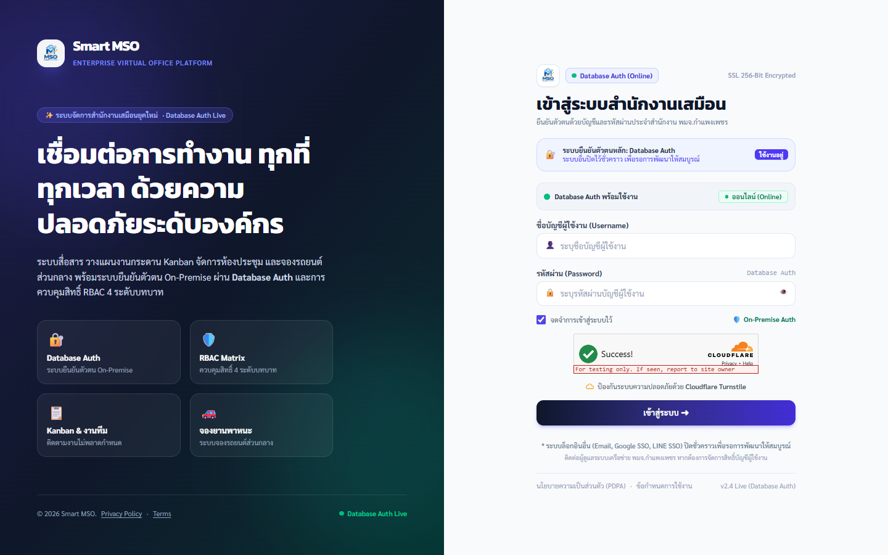
คำนำ เอกสารควบคุม และเครดิตผู้พัฒนาระบบ
คู่มือการใช้งานระบบ Smart MSO Virtual Office (ฉบับที่ 2.0 — Annotated Edition) จัดทำขึ้นสำหรับบุคลากรของ สำนักงานพัฒนาสังคมและความมั่นคงของมนุษย์จังหวัดกำแพงเพชร เพื่อใช้เป็นคู่มือปฏิบัติงานภาคสนามและสำนักงานแบบครบวงจร โดยในฉบับปรับปรุงนี้ได้เพิ่ม ภาพหน้าจอขั้นตอนละเอียดเป็น 31 ภาพ พร้อมระบบ มาร์กจุดชี้ตำแหน่งบนภาพ (กรอบสี่เหลี่ยม วงกลม ลูกศรชี้ และวงกลมเลขลำดับ ①②③) ตรงกับคำอธิบายทีละขั้น การวิเคราะห์เปรียบเทียบข้อดีเหนือระบบกระดาษเดิม ฟังก์ชันพิเศษ คำแนะนำเพื่อความลื่นไหล และแนวทางการต่อยอดด้าน HRM & CRM ในอนาคต
1. ข้อมูลควบคุมเอกสาร (Document Control)
| รายการข้อมูล | รายละเอียดเอกสารมาตรฐาน |
|---|---|
| รหัสเอกสาร / ฉบับที่ | MSO-KPP-UM-002 · ฉบับที่ 2.0 (Annotated & Enhanced Edition) |
| วันที่ปรับปรุง / เว็บแอป | 20 พฤศจิกายน 2569 · https://www.smso.site (Next.js + Supabase Live + Synology NAS) |
| ผู้พัฒนาและเจ้าของระบบ | นายธนวัฒน์ แกมขุนทด (ตำแหน่งนักพัฒนาสังคม · กลุ่มนโยบายและวิชาการ) · พมจ.กำแพงเพชร |
| ขอบเขตภาพและสิทธิ์อ้างอิง | บันทึกจากระบบจริงขนาด 1440 × 900 px จำนวน 31 ภาพ ครอบคลุม 17 โมดูล และแผนอนาคตบทที่ 7 |
2. สัญลักษณ์และระบบมาร์กจุดบนภาพหน้าจอ
ตัวเลขในวงกลมบนภาพตรงกับเลขขั้นตอนด้านล่างแบบ 1 ต่อ 1
เน้นขอบเขตปุ่ม แท็บ เมนู หรือจุดสำคัญบน UI ให้เห็นชัดทันที
อธิบายฟีเจอร์เฉพาะสำนักงานและเทคนิคลัดลดขั้นตอนการทำงาน
สรุปจุดเด่นเทียบงานกระดาษ และแสดงไอคอน 🔒 สำหรับสิทธิ์จำกัด
สารบัญเนื้อหา (ครบทั้ง 7 บท)
สารบัญภาพประกอบหน้าจอระบบจริง (ภาพที่ 1 – 31)
ภาพหน้าจอทั้งหมดบันทึกจากระบบจริงบน https://www.smso.site ที่ความละเอียด 1440 × 900 px พร้อมมาร์กจุดชี้ตำแหน่งบน UI ทุกภาพ คลิกที่ชื่อภาพเพื่อข้ามไปยังหน้าที่แสดงภาพนั้นได้ทันที
หน้าจอกรอก Username / Password และระบบป้องกันความปลอดภัย
-
1
ตรวจสอบสถานะ Database Auth (Online) & SSL: สังเกตป้าย
Database Auth (Online)และSSL 256-Bit Encryptedด้านบนขวา ก่อนเริ่มกรอกข้อมูล -
2
เช็กสัญญาณพร้อมใช้งานฐานข้อมูล: แถบ
Database Auth พร้อมใช้งาน • ออนไลน์ยืนยันว่าระบบพร้อมตรวจสอบสิทธิ์กับเซิร์ฟเวอร์สำนักงาน -
3
กรอก Username / Password & สลับดูรหัสผ่าน (👁️): พิมพ์ชื่อบัญชีและรหัสผ่านประจำสำนักงาน กดไอคอนตา
👁️เพื่อตรวจความถูกต้อง และติ๊ก จดจำการเข้าสู่ระบบไว้ หากใช้เครื่องส่วนตัว -
4
เกราะป้องกัน Cloudflare Turnstile: รอให้กรอบ Cloudflare Turnstile แสดง
Success!อัตโนมัติ (ป้องกันบอทและสแปมเข้าสู่ระบบราชการ) -
5
กดปุ่มเข้าสู่ระบบ: คลิกปุ่ม เข้าสู่ระบบ ➔ เพื่อเปิดใช้งานระบบตามสิทธิ์ RBAC ของบัญชีตนเองทันที
โครงสร้างเมนู 5 กลุ่มหลัก และหน้าแรกภาพรวมสำนักงาน (Dashboard)
-
1
เมนูระบบราชการ 5 กลุ่ม (ซ้าย): รวมเมนูหลัก
ภาพรวม,งาน & บริการ,คลังข้อมูล,เครื่องมือ & Tools,การจัดการพร้อมปุ่มย่อเมนู◀และแสดงไอคอน 🔒 หน้าเมนูจำกัดสิทธิ์ -
2
Top Bar เครื่องมือส่วนบน: ช่องค้นหารวมทั้งระบบ, ปุ่ม 🌙 โหมดกลางคืน, สถานะ 🟢 Supabase Live, กระดิ่ง 🔔 แจ้งเตือน และปุ่ม ออกจากระบบ
-
3
ปุ่มทางลัดด่วน (Quick Actions): เข้าถึงงานด่วนจากหน้าแรกได้ทันที 3 ปุ่ม:
🚗 ขอใช้รถราชการ,📹 จองห้องประชุม, และ+ เพิ่มงานใหม่ -
4
ศูนย์บริการดิจิทัล 6 การ์ด & บัตร KPI สด 6 ใบ: แสดงตัวเลข Realtime ทั้งจำนวนงานค้าง (
2 งาน), หนังสือเวียน, นัดหมาย (6 นัดหมาย), รถว่าง (10 / 10 คัน), KPI และสมาชิก 41 ท่าน -
5
4 กลุ่มภารกิจ & กำหนดการวันนี้: ดูภารกิจสำคัญของ 4 กลุ่มงาน พมจ. และตารางประชุมประจำวันพร้อมปุ่มเข้าสู่ปฏิทินได้ในคลิกเดียว
ศูนย์การแจ้งเตือนแบบแยกหมวดหมู่ (Notifications Center)
-
1
คลิกกระดิ่งแจ้งเตือน (🔔): ตัวเลขสีแดงบนกระดิ่งแสดงจำนวนรายการใหม่ที่ยังไม่อ่าน คลิกเพื่อเปิดหน้าต่างแจ้งเตือนแบบเรียลไทม์
-
2
จัดการสถานะอ่านทั้งหมด & แจ้งเตือนเบราว์เซอร์: คลิก ✓ อ่านทั้งหมด เพื่อล้างยอดค้างอ่าน หรือกด เปิดใช้งาน เพื่อรับแจ้งเตือนบนหน้าจอคอมพิวเตอร์
-
3
กรองตามหมวดหมู่งาน 5 แท็บ: แยกดูเฉพาะหมวด
ทั้งหมด,💬 แชท,📜 หนังสือเวียน,📅 ประชุม, และ📬 คำขอ/งานได้อย่างเป็นระเบียบ -
4
กดเปิดดูรายการทันที (เปิดดู ➜): คลิกที่การ์ดรายการหรือปุ่ม เปิดดู ➜ เพื่อกระโดดไปยังหน้าจองรถ นัดประชุม หรือภารกิจงานนั้นทันที
วิเคราะห์จุดเด่น ฟังก์ชันพิเศษ และคำแนะนำการใช้งาน (บทที่ 1 — ระบบยืนยันตัวตน, Dashboard & แจ้งเตือน)
| ประเด็นเปรียบเทียบ | ระบบเดิม (กระดาษ / งานมือ) | ระบบ Smart MSO (ดิจิทัล) | ประโยชน์หลักที่สำนักงานได้รับ |
|---|---|---|---|
| การเข้าถึงระบบงาน | ต้องเปิดหลายโปรแกรม/หลายลิงก์ แยกแฟ้มหรือจำรหัสหลายชุด ไม่มีจุดรวมศูนย์ | Single Portal ที่ smso.site ล็อกอินครั้งเดียวผ่านบัญชีสำนักงาน เข้าได้ครบ 17 โมดูล |
ลดเวลาเริ่มต้นทำงานประจำวัน และลดการลืมรหัสผ่านข้ามระบบ |
| ติดตามงาน & นัดหมาย | ต้องคอยถามปากเปล่า เช็กบอร์ดติดประกาศ หรือไล่อ่านในกลุ่มแชทยาว ๆ | หน้าแรก Dashboard KPI รวมยอดงานค้าง นัดวันนี้ รถว่าง 10/10 คัน และกระดิ่ง 🔔 แจ้งเตือน |
ผู้บริหารและเจ้าหน้าที่เห็นภาพรวมสำนักงานแบบ Realtime ภายใน 3 วินาที |
| ความปลอดภัยเข้าสู่ระบบ | แชร์ไฟล์ในวงแลนหรือส่งลิงก์เปิดไม่มีระบบป้องกันบอทและบันทึกสิทธิ์ระดับบทบาท | ตรวจสอบ Database Auth + เกาะป้องกัน Cloudflare Turnstile + สิทธิ์ RBAC |
ป้องกันผู้ไม่หวังดีจากภายนอกและจำกัดการเห็นข้อมูลตามระดับหน้าที่ |
Supabase Live และ 🌙 โหมดกลางคืน ที่จดจำค่าผู้ใช้- ใช้ปุ่มย่อเมนู ◀ (Collapse Sidebar) เมื่อใช้งานบนโน้ตบุ๊กจอเล็ก เพื่อขยายพื้นที่ตาราง Data Hub หรือกระดาน Kanban ให้กว้างเต็มตา
- กดเปิดรับ Browser Notifications ในหน้า
👤 ข้อมูลส่วนตัวจะช่วยแจ้งเตือนเวลามีหนังสือเวียนด่วนหรือรถราชการอนุมัติแม้ย่อหน้าต่างอยู่ - ดูสัญลักษณ์ 🟢 Supabase Live มุมขวาบนก่อนกรอกข้อมูลสำคัญ เพื่อยืนยันว่าการเชื่อมต่อฐานข้อมูล Realtime ทำงานสมบูรณ์
ระบบหนังสือเวียนอิเล็กทรอนิกส์ (หน้าหลักและทะเบียนรับ-ส่ง)
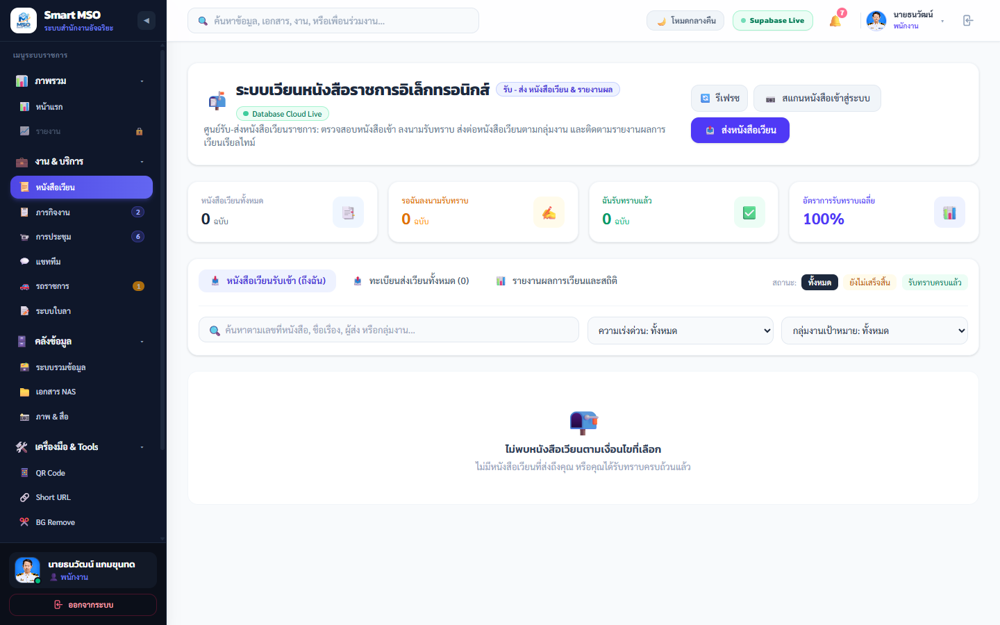
-
1
ปุ่มดำเนินการด้านบน: กด 🔄 รีเฟรช โหลดรายการล่าสุด, 📷 สแกนหนังสือเข้าสู่ระบบ ผ่านกล้อง/เว็บแคม, หรือ 📤 ส่งหนังสือเวียน เพื่อออกหนังสือใหม่
-
2
ตรวจสอบสถิติ KPI ทั้ง 4 กล่อง: ดูยอด
หนังสือเวียนทั้งหมด,รอฉันลงนามรับทราบ,ฉันรับทราบแล้ว, และอัตราการรับทราบเฉลี่ยแบบ Realtime -
3
สลับ 3 แท็บงานสารบรรณ: เลือกดู 📥 หนังสือเวียนรับเข้า (ถึงฉัน), 📤 ทะเบียนส่งเวียนทั้งหมด, และ 📊 รายงานผลการเวียนและสถิติ
-
4
กรอง ค้นหา และตรวจสอบสถานะ: กรองตามสถานะ
ทั้งหมด / ยังไม่เสร็จสิ้น / รับทราบครบแล้ว, ค้นหาจากเลขที่-ชื่อเรื่อง, หรือเลือกชั้นความเร่งด่วน/กลุ่มงาน
ระบบหนังสือเวียน (ต่อ) — ขั้นตอนการส่งหนังสือเวียนใหม่และช่องทางแนบไฟล์
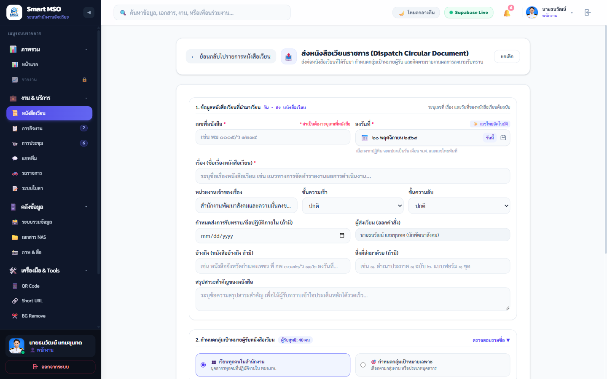
-
1
ส่วนหัวการออกหนังสือเวียน: ตรวจสอบคำสั่ง
ส่งหนังสือเวียนราชการและใช้ปุ่ม← ย้อนกลับหรือยกเลิกหากต้องการยกเลิกร่าง -
2
กรอกเลขที่หนังสือ ลงวันที่ & ✨ เลขไทยอัตโนมัติ: ระบุเลขที่หนังสือ (เช่น
พม ๐๐๐๕/ว ๑๒๓๔) เลือกวันที่จากปฏิทิน ระบบแปลงเป็น เลขไทยอัตโนมัติ (๒๐ พฤศจิกายน ๒๕๖๙) ทันที -
3
กำหนดชั้นความเร็ว ชั้นความลับ & สรุปสาระสำคัญ: เลือกชั้นความเร็ว (
ปกติ / ⚡ ด่วน / ⚡⚡ ด่วนมาก / 🚨 ด่วนที่สุด), ชั้นความลับ, อ้างถึง, สิ่งที่ส่งมาด้วย และสรุปประเด็นหลัก -
4
กำหนดกลุ่มเป้าหมาย & แนบไฟล์ 3 ช่องทาง: เลือกเวียนทั้งสำนักงาน (
40 คน) หรือเลือกเฉพาะกลุ่มงาน จากนั้นแนบไฟล์ได้ 3 ช่องทาง (สแกนสด, อัปโหลดจากเครื่อง, หรือดึงจากคลัง Synology NAS) แล้วกดส่ง
กระดานติดตามภารกิจงาน (Kanban Board)
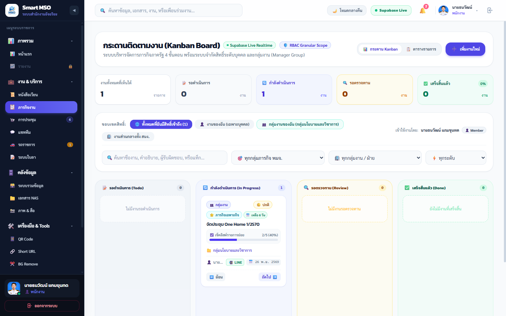
-
1
สลับมุมมอง Kanban / ตาราง & เพิ่มงานใหม่: สลับระหว่าง 📊 กระดาน Kanban กับ 📋 ตารางรายการ และกด ➕ เพิ่มงานใหม่ เพื่อสร้างภารกิจ
-
2
บัตรสรุปสถานะงาน 5 กล่อง: แสดงจำนวนงานรวม, รอดำเนินการ, กำลังดำเนินการ, รอตรวจทาน, และเปอร์เซ็นต์งานเสร็จสิ้นแล้ว
-
3
ตัวกรองขอบเขตสิทธิ์ (RBAC Granular Scope): คัดกรองตามสิทธิ์
ทั้งหมดที่เห็นได้,งานของฉัน,กลุ่มงานของฉัน,งานส่วนกลางทั้ง สนง.ร่วมกับภารกิจ/ความเร่งด่วน -
4
การ์ดภารกิจ & แถบเช็คลิสต์ย่อย + ส่งต่อ LINE: แสดงความคืบหน้า Subtasks (
2/5 (40%)), วันคงเหลือ, ปุ่ม 📲 LINE แจ้งเตือน และปุ่มเลื่อนสถานะ ⬅️ ย้อน / ถัดไป ➡️
กระดานภารกิจงาน (ต่อ) — การเพิ่มภารกิจใหม่และกำหนดสิทธิ์ Visibility Scope
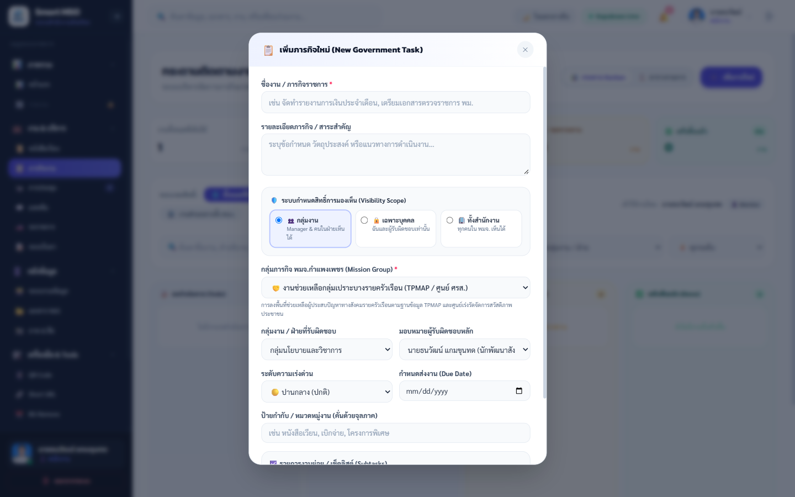
-
1
ระบุชื่องานและรายละเอียดสาระสำคัญ: กรอกหัวข้อภารกิจ (
ชื่องาน / ภารกิจราชการ *) และวัตถุประสงค์หรือแนวทางการดำเนินงานให้ชัดเจน -
2
เลือกสิทธิ์การมองเห็น (Visibility Scope) 3 ระดับ: เลือกว่าให้เห็นเฉพาะ 👥 กลุ่มงาน (Manager & คนในฝ่าย), 🔒 เฉพาะบุคคล (ฉันและผู้รับผิดชอบ), หรือ 🏢 ทั้งสำนักงาน
-
3
จัดหมวดหมู่ตามกลุ่มภารกิจ พมจ. (Mission Group): เชื่อมภารกิจเข้ากับหมวดหมู่หลัก เช่น งานช่วยเหลือกลุ่มเปราะบาง (TPMAP / ศรส.), เงินอุดหนุนเด็กแรกเกิด, หรือ ศูนย์บริการคนพิการ
-
4
มอบหมายผู้รับผิดชอบ กำหนดความเร่งด่วน & เช็คลิสต์: ระบุกลุ่มงาน ผู้รับผิดชอบหลัก ระดับความเร่งด่วน กำหนดส่งงาน (Due Date) ป้ายกำกับ และเพิ่มรายการงานย่อย (Subtasks) ด้านล่าง
ระบบการประชุมและนัดหมาย (ปฏิทิน & Google Calendar Sync)
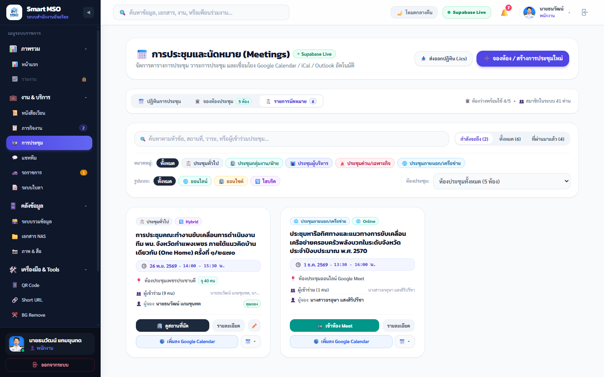
-
1
ส่งออกปฏิทิน (.ics) หรือสร้างการประชุมใหม่: กด 📥 ส่งออกปฏิทิน (.ics) เพื่อนำเข้าปฏิทินส่วนตัว (Outlook / Apple) หรือกด ➕ จองห้อง / สร้างการประชุมใหม่
-
2
เลือกมุมมอง 3 แท็บหลัก: สลับดู
📅 ปฏิทินการประชุม,🏛️ จองห้องประชุม (5 ห้อง), และ📋 รายการนัดหมาย (6) -
3
กรองตามเวลา หมวดหมู่ รูปแบบ & ห้องประชุม: คัดกรองได้ละเอียดทั้ง กำลังจะถึง / ที่ผ่านมาแล้ว, ประเภทประชุม, รูปแบบ
🌐 ออนไลน์ / 🏢 ออนไซต์ / 🔄 ไฮบริด, และห้องประชุมทั้ง 5 ห้อง -
4
จัดการการ์ดนัดหมาย & เพิ่มลง Google Calendar: คลิก 🏢 ดูสถานที่นัด หรือ 📹 เข้าห้อง Meet (สำหรับประชุมออนไลน์/Hybrid), ดูรายละเอียด/แก้ไข (✏️), และ 🔵 เพิ่มลง Google Calendar
ระบบการประชุม (ต่อ) — การตรวจสอบความพร้อมและจองห้องประชุม 5 ห้อง
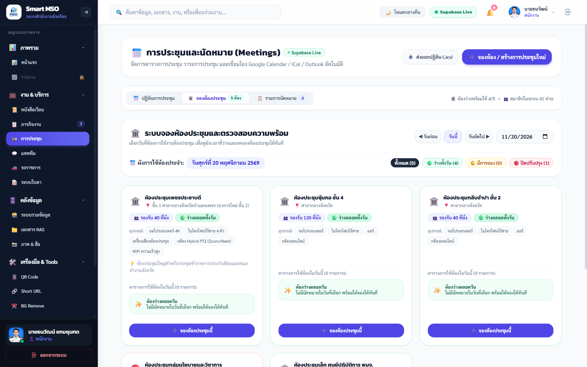
-
1
แท็บจองห้องประชุมและตัวเลขห้องว่างทันที: แถบด้านบนแสดงสถานะรวม
🏛️ ห้องว่างพร้อมใช้ 4/5ณ วันปัจจุบัน -
2
เลือกวันที่ต้องการใช้ห้องประชุม: กดปุ่ม
◀ วันก่อน,วันนี้,วันถัดไป ▶หรือเลือกวันที่ล่วงหน้าจากปฏิทินเพื่อเช็กผังการใช้ห้อง -
3
กรองตามสถานะห้องประชุม 5 ห้อง: สลับกรอง
ทั้งหมด (5),🟢 ว่างทั้งวัน,🟡 มีการจอง, หรือ🔴 ปิดปรับปรุง -
4
ตรวจสอบอุปกรณ์ในห้องแล้วกดจองทันที: ดูจำนวนที่นั่ง (เช่น ห้องเพชรประชาบดี 40 ที่นั่ง / ซุ้มกอ 120 ที่นั่ง / กลีบจำปา 40 ที่นั่ง) อุปกรณ์ (จอ 4K, กล้อง Hybrid PTZ) แล้วกดปุ่ม ➕ จองห้องประชุมนี้
ระบบแชทกลุ่มราชการ และการแนบไฟล์ตรงสู่ Synology NAS
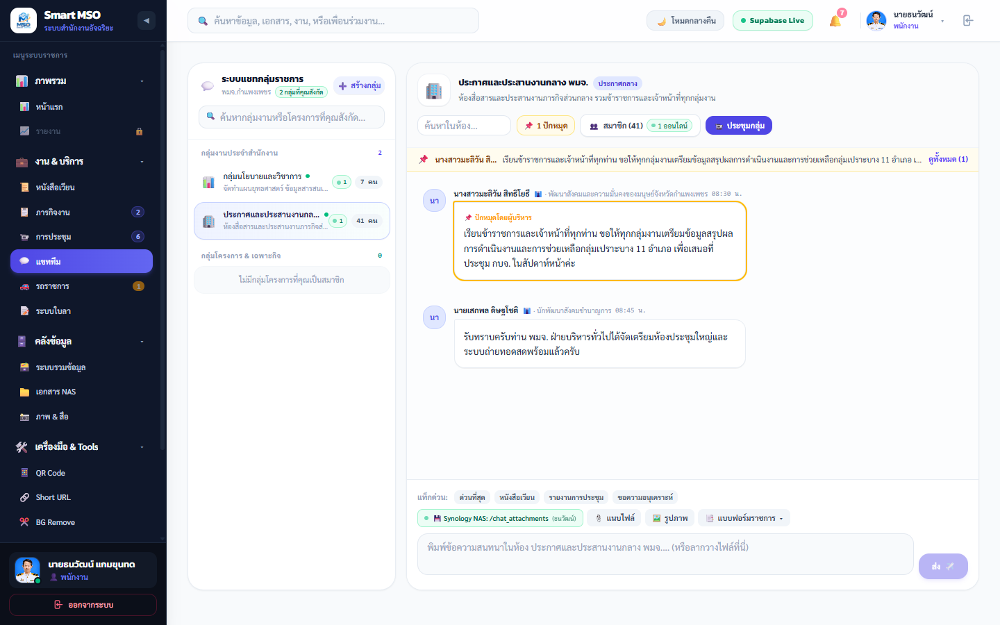
-
1
เลือกรายการห้องแชทประจำกลุ่มงาน & โครงการเฉพาะกิจ: เลือกห้องประจำสังกัด (เช่น กลุ่มนโยบายและวิชาการ) หรือห้องกลาง
ประกาศและประสานงานกลาง พมจ.ค้นหาห้อง หรือคลิก ➕ สร้างกลุ่ม -
2
ค้นหาในห้อง ดูประกาศปักหมุด สมาชิก & เปิดประชุมกลุ่ม: แถบเครื่องมือบนห้องแสดงจำนวนสมาชิกออนไลน์ (
👥 สมาชิก 41 · 1 ออนไลน์), รายการ 📌 ปักหมุด, และปุ่ม 📹 ประชุมกลุ่ม -
3
ข้อความปักหมุดโดยผู้บริหาร & ปลดหมุด/ปักหมุด: ข้อความสั่งการสำคัญจะแสดงแถบปักหมุดด้านบน (กด
ดูทั้งหมด) เพื่อไม่ให้ข้อสั่งการจมหายไปกับบทสนทนาประจำวัน -
4
ติดแท็กด่วน แนบไฟล์ขึ้น Synology NAS & แทรกแบบฟอร์มราชการ: เลือกแท็ก
ด่วนที่สุด / หนังสือเวียน / รายงานการประชุมแนบไฟล์/ภาพเข้าโฟลเดอร์💾 Synology NAS: /chat_attachmentsและส่งเอกสารจาก 📑 แบบฟอร์มราชการ ▾
ระบบจองรถยนต์ราชการ พมจ.กำแพงเพชร (ติดตาม 4 ขั้นตอนอนุมัติ)
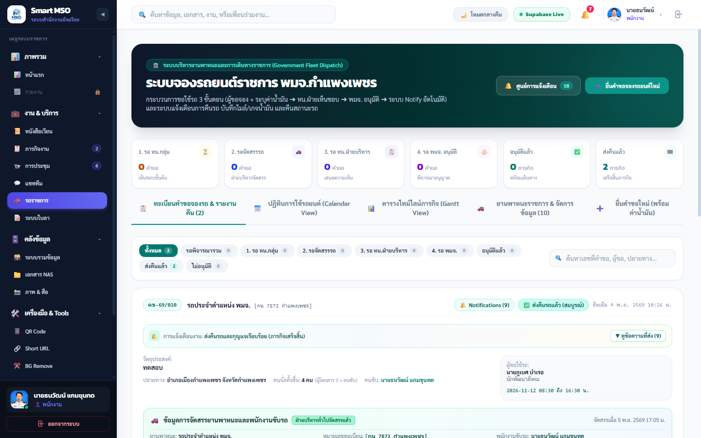
-
1
ยื่นคำขอใหม่ & ศูนย์แจ้งเตือน 18 รายการ: กด ➕ ยื่นคำขอจองรถยนต์ใหม่ หรือเช็กความคืบหน้าคำขอ/การคืนรถผ่าน 🔔 ศูนย์การแจ้งเตือน
-
2
การ์ดติดตามขั้นตอนพิจารณา 6 ระยะ: ดูจำนวนคำขอที่ค้างแต่ละขั้นตั้งแต่
1. รอ หน.กลุ่ม➔ฝ่ายบริหารจัดสรร➔หน.ฝ่ายบริหาร➔พมจ. อนุมัติ➔ส่งคืนแล้ว -
3
5 แท็บมุมมองบริหารยานพาหนะ: สลับดูทะเบียนคำขอ, 📅 ปฏิทินการใช้รถ, 📊 Gantt View ไทม์ไลน์ (เลี่ยงรถซ้อน), ข้อมูลรถ (สิทธิ์ Admin), และ ➕ ยื่นคำขอใหม่
-
4
การ์ดคำขอ & ประวัติแจ้งเตือนอัตโนมัติ: แสดงเลขที่คำขอ (เช่น
คข-69/010), ทะเบียนรถและพนักงานขับรถที่จัดสรรให้, ปลายทาง, จำนวนคนนั่ง และปุ่ม 🔔 Notifications ดูข้อความแจ้งเตือนย้อนหลัง
ระบบจองรถยนต์ (ต่อ) — แบบ พมจ.กพ 02: ยื่นคำขอใหม่ & ปลายทางด่วน 11 อำเภอ
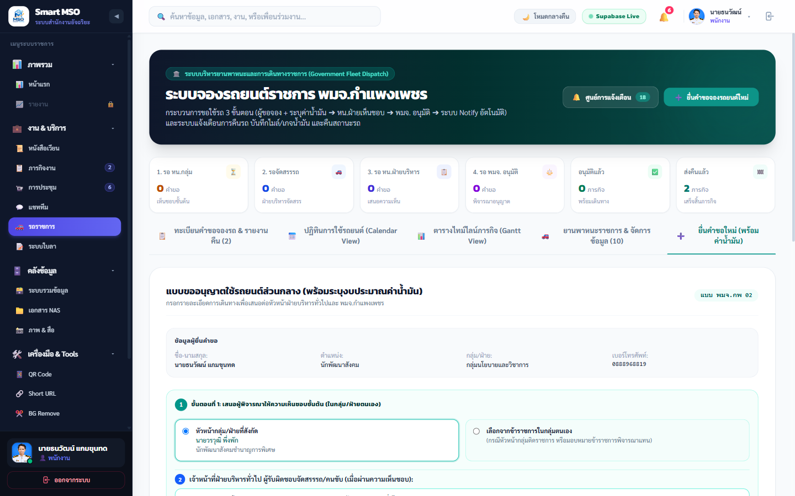
-
1
แท็บ + ยื่นคำขอใหม่ (แบบ พมจ.กพ 02): คลิกแท็บ ➕ ยื่นคำขอใหม่ (พร้อมค่าน้ำมัน) เพื่อเปิดแบบขออนุญาตใช้รถยนต์ส่วนกลาง (แบบ พมจ.กพ 02)
-
2
ตรวจสอบข้อมูลผู้ยื่นคำขออัตโนมัติ (แบบ พมจ.กพ 02): ระบบดึงชื่อ ตำแหน่ง กลุ่ม/ฝ่าย และข้อมูลติดต่อของผู้ขอจากฐานข้อมูลให้อัตโนมัติ ลดการกรอกซ้ำ
-
3
ขั้นตอนที่ 1: เลือกผู้เห็นชอบชั้นต้นในกลุ่ม/ฝ่าย: ค่าเริ่มต้นจะระบุ หัวหน้ากลุ่ม/ฝ่ายที่สังกัด ให้อัตโนมัติ หรือเลือกสลับเป็นข้าราชการในกลุ่มพิจารณาแทนกรณีหัวหน้ากลุ่มติดราชการ
-
4
ขั้นตอนที่ 2 จัดสรรรถ/คนขับ (10 คัน) & ปลายทางด่วน 11 อำเภอ: ผู้ขอ ไม่ต้องเลือกรถเอง ฝ่ายบริหารทั่วไปจะจัดสรรรถราชการ 10 คันและคนขับในขั้นที่ 2 จากนั้นเลื่อนลงด้านล่างเพื่อกดปุ่ม 🎯 ปลายทางด่วน ทั้ง 11 อำเภอ คำนวณระยะทางไป-กลับ (35–175 กม.) และค่าน้ำมันอัตโนมัติ
ระบบใบลาอิเล็กทรอนิกส์ — ก. แบบฟอร์ม 1 (ลาป่วย / ลากิจส่วนตัว / ลาคลอดบุตร)
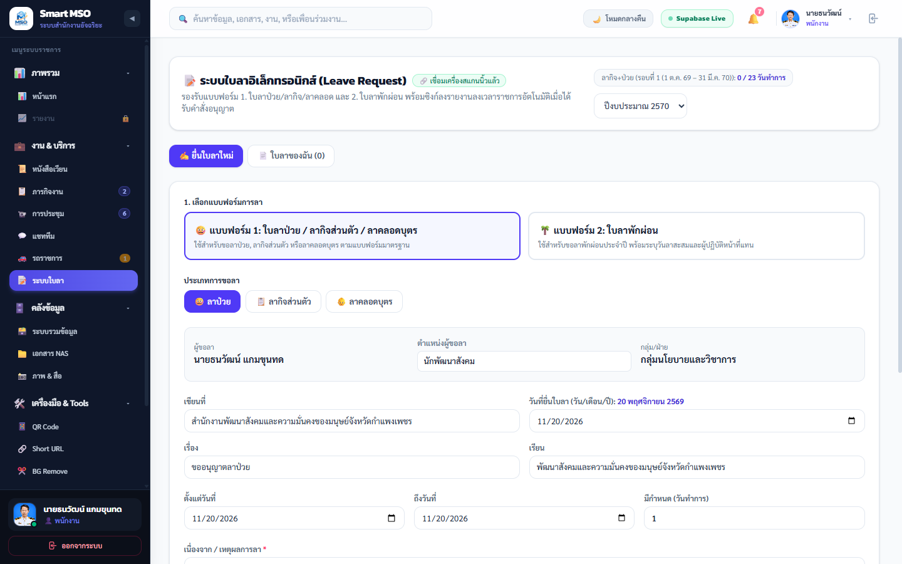
-
1
เช็กสถานะเชื่อมเครื่องสแกนนิ้ว & โควตาลากิจ+ป่วย: สังเกตป้าย
🔗 เชื่อมเครื่องสแกนนิ้วแล้ว, กรอบแสดงวันลา0 / 23 วันทำการ(รอบ 6 เดือน), และตัวเลือกปีงบประมาณ (2569–2571) -
2
เลือกแท็บยื่นใบลาใหม่: แท็บ ✍️ ยื่นใบลาใหม่ ใช้สร้างใบลา ส่วน 📄 ใบลาของฉัน ใช้ติดตามสถานะย้อนหลัง
-
3
เลือกแบบฟอร์ม 1 & ประเภทการขอลา 3 แบบ: คลิกการ์ด 🤒 แบบฟอร์ม 1 แล้วเลือกปุ่ม
🤒 ลาป่วย,📋 ลากิจส่วนตัว, หรือ👶 ลาคลอดบุตร -
4
กรอกเหตุผล ช่วงวันลา ประวัติลาล่าสุด & ส่งเข้าสายพิจารณา 3 ขั้น: ตรวจสอบข้อมูลที่ระบบเติมให้อัตโนมัติ กรอก เหตุผลการลา * (ระบบดึงประวัติลาครั้งสุดท้ายให้) แล้วกด 📨 ส่งใบลาเข้าสู่สายการพิจารณา
ระบบใบลา (ต่อ) — ข. แบบฟอร์ม 2 (ใบลาพักผ่อนประจำปี)
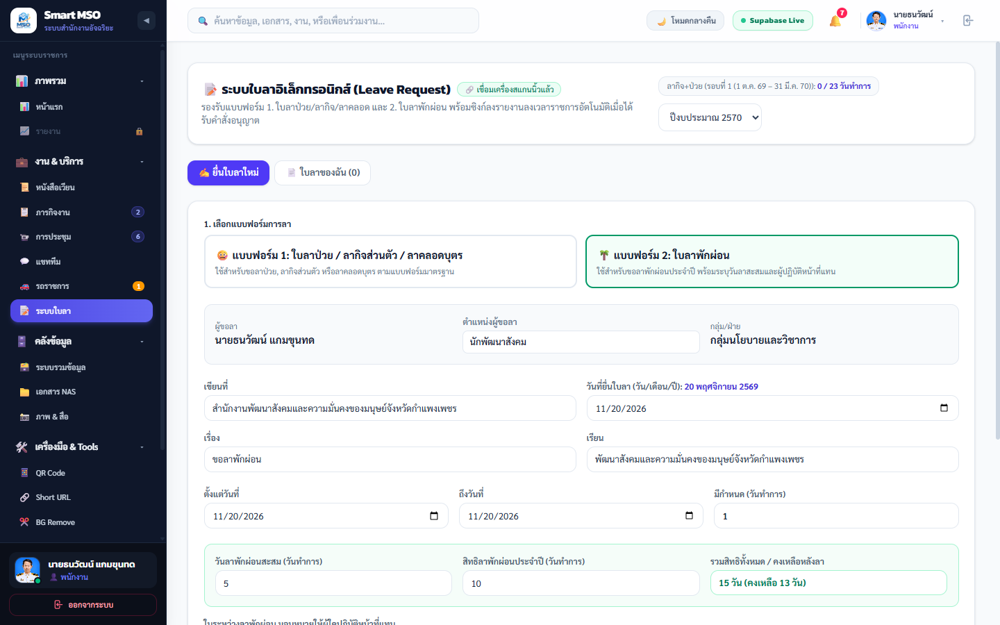
-
1
คลิกเลือกแบบฟอร์ม 2: ใบลาพักผ่อน: ระบบจะปรับหัวข้อเรื่องเป็น
ขอลาพักผ่อนและแสดงกล่องคำนวณสิทธิวันลาพักผ่อนเฉพาะของแบบฟอร์มนี้โดยอัตโนมัติ -
2
กำหนดวันที่ลาและจำนวนวันทำการ: ระบุวันที่เขียน
ตั้งแต่วันที่ – ถึงวันที่และจำนวนวันทำการในช่องมีกำหนด (วันทำการ) -
3
คำนวณวันลาคงเหลืออัตโนมัติ & เลือกผู้ปฏิบัติหน้าที่แทน: ตรวจสอบ วันลาพักผ่อนสะสม + สิทธิประจำปี ระบบแสดงยอด
รวมสิทธิทั้งหมด / คงเหลือหลังลาทันที และเลือกชื่อ ผู้ปฏิบัติหน้าที่แทน ด้านล่างก่อนกดส่ง
ระบบใบลา (ต่อ) — ค. แท็บใบลาของฉันและการซิงก์ลงเวลาราชการอัตโนมัติ
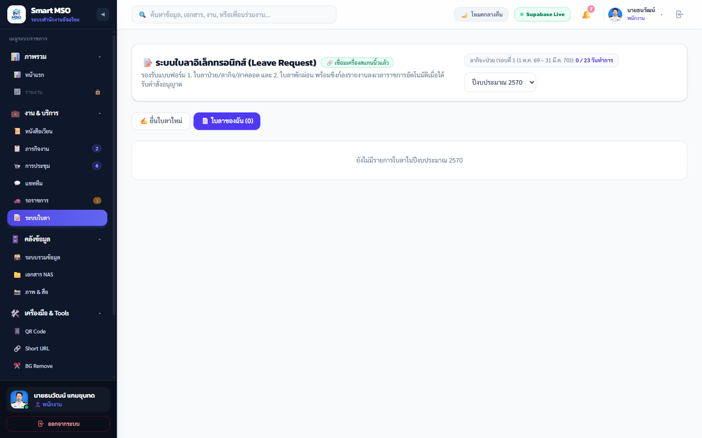
-
1
สลับดูประวัติและโควต้าตามปีงบประมาณ: เลือก
ปีงบประมาณ 2569 / 2570 / 2571เพื่อเรียกดูข้อมูลและสรุปวันลากิจ+ป่วยย้อนหลังของแต่ละปีงบประมาณได้ทันที -
2
กดแท็บ 📄 ใบลาของฉัน: แสดงจำนวนใบลาที่ยื่นทั้งหมดในวงเล็บ พร้อมการ์ดติดตามความคืบหน้าของแต่ละขั้นตอนการพิจารณา
-
3
ซิงก์เข้าสู่รายงานลงเวลาราชการอัตโนมัติเมื่ออนุมัติ: เมื่อผ่านครบ 3 ขั้นตอนแล้ว วันลาจะถูกผูกเป็นหมายเหตุลงในรายงานลงเวลาปฏิบัติราชการประจำวันโดยไม่ต้องแจ้งซ้ำ
วิเคราะห์จุดเด่น ฟังก์ชันพิเศษ และคำแนะนำการใช้งาน (บทที่ 2 — หนังสือเวียน, งาน Kanban, ประชุม, แชท, รถราชการ & ใบลา)
| ประเด็นเปรียบเทียบ | ระบบเดิม (กระดาษ / งานมือ) | ระบบ Smart MSO (ดิจิทัล) | ประโยชน์หลักที่สำนักงานได้รับ |
|---|---|---|---|
| งานสารบรรณหนังสือเวียน | เดินแฟ้มเวียนกระดาษทีละโต๊ะ ช้า เสี่ยงแฟ้มค้างหรือเอกสารสูญหาย ไม่รู้ใครอ่านแล้ว | เวียนอิเล็กทรอนิกส์ 1 คลิก แนบได้ 3 ช่องทาง รู้อัตราลงนามรับทราบแบบ Realtime | ลดกระดาษ 100% ลดเวลาเดินแฟ้มข้ามกลุ่มงานจากหลายวันเหลือหลักนาที |
| การจองรถยนต์ส่วนกลาง | เขียนใบขอ พมจ.กพ 02 ด้วยมือ เดินตามลายเซ็น 4 โต๊ะ ไม่รู้ตารางรถว่าง/ชนกันหรือไม่ | แบบ พมจ.กพ 02 ดิจิทัล ปุ่มปลายทางด่วน 11 อำเภอ Gantt View & แจ้งเตือนครบ 4 ขั้น |
ป้องกันจองรถซ้อน คาดการณ์งบน้ำมันแม่นยำ และเก็บประวัติคืนรถโปร่งใส |
| การขออนุญาตลา | เขียนใบลา นับวันลากิจ+ป่วยเอง ยื่นแฟ้มรอสถิติ-หน.ฝ่าย-พมจ. และคีย์วันลาลงรายงานเวลาซ้ำ | คำนวณวันลา+คงเหลืออัตโนมัติ ส่งผ่านสายอนุมัติ 3 ขั้น และซิงก์เข้า ลงเวลาราชการ ทันที |
ไม่ผิดพลาดเรื่องโควตา 23 วัน/ลาสะสม และลดงานซ้ำซ้อนของฝ่ายธุรการ |
| ติดตามภารกิจ & ประชุม | สั่งงานในแชทส่วนตัวข้อความเลื่อนหาย นัดประชุมต้องถามห้องว่างผ่านโทรศัพท์ | Kanban 4 สถานะพร้อม RBAC Scope + ผังห้อง 5 ห้อง/อุปกรณ์ + Google Calendar .ics |
ติดตามความก้าวหน้า Subtasks ได้แม่นยำและไม่มีปัญหาจองห้องประชุมซ้ำซ้อน |
๒๐ พฤศจิกายน ๒๕๖๙) ตรงตามระเบียบงานสารบรรณทันทีSynology NAS: /chat_attachments- ดู Gantt View ก่อนขอใช้รถในช่วงภารกิจหนาแน่น ในเมนู
🚗 รถราชการเพื่อทราบช่วงเวลาที่รถและคนขับพร้อมให้บริการ - ใช้ปุ่ม 🔵 เพิ่มลง Google Calendar บนการ์ดประชุม เพื่อรับแจ้งเตือนก่อนเวลาประชุม 15–30 นาทีบนสมาร์ตโฟนทันที
- ปักหมุดข้อความข้อสั่งการสำคัญในห้องแชทกลาง และใช้แท็ก
ด่วนที่สุด / หนังสือเวียนเพื่อค้นหาย้อนหลังได้ในเสี้ยววินาที
ศูนย์ข้อมูลและสถิติสังคม (Data Hub) — แท็บที่ 1: สถานการณ์ทางสังคมฯ
-
1
สลับใช้งาน 6 แท็บศูนย์ข้อมูล & ตัวเลขสรุปจังหวัด: แถบนำทางสีน้ำเงินสลับได้ครบทั้ง 6 แท็บ ด้านบนขวาสรุปภาพรวม
11 อำเภอและบุคลากรในระบบ 40 ท่าน -
2
เลือกปีงบประมาณ พื้นที่ 11 อำเภอ & ปุ่มส่งออกรายงาน กบจ.: กรองรายปีงบ (
2570/2569/2568) และเจาะจง 11 อำเภอ พร้อมปุ่ม 📊 ส่งออก Excel และ 🖨️ พิมพ์รายงาน กบจ. -
3
เจาะลึก 7 หมวดประชากร & กลุ่มเปราะบาง + ตารางรายอำเภอ: สลับหมวด
ประชากร,กลุ่มเปราะบาง,เด็ก,สตรี,ผู้สูงอายุ,พิการ,คนไร้ที่พึ่งเพื่อดูตัวเลขจังหวัดและตาราง 11 อำเภอ
Data Hub (ต่อ) — แท็บที่ 2: วิเคราะห์ TPMAP กำแพงเพชร (ภาพรวม 11 อำเภอ)
-
1
เปิดแท็บวิเคราะห์ TPMAP จังหวัดกำแพงเพชร (รหัส 62): เชื่อมโยงฐานข้อมูลจริงจาก
tpmap.in.thตามเกณฑ์ จปฐ. แผนพัฒนาฯ ฉบับที่ 13 พร้อมสถานะ 💾 แคชใน Supabase -
2
ปุ่มซิงก์ข้อมูล & ดาวน์โหลดชุดข้อมูล CSV / คำอธิบาย: กด 🔄 ซิงก์ปี 2569 ล่าสุด หรือ ⬇️ ซิงก์ 2565–2569 ลง Supabase และมีลิงก์ดาวน์โหลด
CSV,📘 คำอธิบายชุดข้อมูล (.xlsx), และเปิดเว็บ TPMAP -
3
ตัวกรองปี พ.ศ. 2565–2569, กลุ่มเป้าหมาย & ระดับอำเภอ/ตำบล: สลับปี 2565–2569 กลุ่มเป้าหมาย 3 ประเภท และระดับพื้นที่ (ระดับอำเภอ 11 / ระดับตำบล 78) ด้านล่างสรุป 4 KPI สำคัญทันที
Data Hub (ต่อ) — เจาะลึก TPMAP ระดับตำบล (78 ตำบล), แนวโน้ม 5 ปี & 5 มิติ MPI
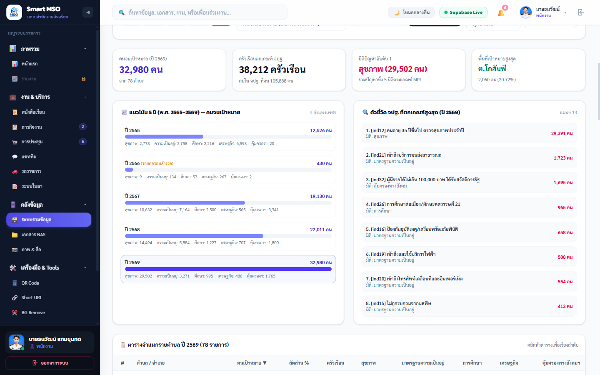
-
1
สรุปผลเป้าหมายระดับตำบล 78 แห่ง: แสดงผลคำนวณเฉพาะพื้นที่ตำบล เช่น พื้นที่เป้าหมายสูงสุด
ต.โกสัมพี (2,060 คน · 20.72%)และมิติปัญหาอันดับ 1 -
2
กราฟแท่งแนวโน้ม 5 ปี (พ.ศ. 2565–2569) คลิกสลับปีได้: เปรียบเทียบสัดส่วนคนจนเป้าหมายรายปี พร้อมแตกตัวเลข 5 มิติ (สุขภาพ ความเป็นอยู่ ศึกษา เศรษฐกิจ คุ้มครองฯ) คลิกแท่งปีเพื่อดูข้อมูลปีนั้นทันที
-
3
จัดอันดับ 8 ตัวชี้วัด จปฐ. ที่ตกเกณฑ์สูงสุด (แผนฯ 13): ชี้เป้าปัญหารายข้อที่พบบ่อยที่สุดในจังหวัด (เช่น
[ind12] ตรวจสุขภาพอายุ 35+ ปี,[ind21] ขนส่งสาธารณะ,[ind32] สวัสดิการรัฐ) -
4
ตาราง 78 ตำบลเรียงลำดับตาม 5 มิติ MPI: คลิกหัวตารางทุกคอลัมน์เพื่อจัดอันดับตำบลที่มีปัญหาเฉพาะมิติ (เช่น เศรษฐกิจ/การศึกษา) สำหรับวางแผนลงพื้นที่ช่วยเหลือ
Data Hub (ต่อ) — แท็บที่ 3: ระบบงาน 4 กลุ่มภารกิจ พมจ.
-
1
เข้าสู่แท็บระบบงาน 4 กลุ่มภารกิจ พมจ.: แสดงโครงสร้างและภารกิจหลักของทุกกลุ่มงานภายในสำนักงาน พมจ.กำแพงเพชร
-
2
กดกรองเฉพาะกลุ่มงานหรือดูภาพรวมทั้งหมด: เลือกดู
🌐 ภาพรวมทั้ง 4 กลุ่มงานหรือเจาะจง🏛️ บริหารทั่วไป,📊 นโยบายและวิชาการ,🤝 สังคมและสวัสดิการ,♿ ศูนย์คนพิการ (พก.) -
3
ตรวจชื่อผู้กำกับดูแล KPI หลัก และกด ดูข้อมูล ➔: แต่ละการ์ดระบุผู้กำกับดูแล ขอบเขตภารกิจ และตัวชี้วัดสำคัญ (เช่น KPI 94.2%, กองทุน 84 ตำบล, คนพิการจดทะเบียน 24,850 คน) พร้อมปุ่ม ดูข้อมูล ➔
Data Hub (ต่อ) — แท็บที่ 4: ทำเนียบข้าราชการและเจ้าหน้าที่ (40 ท่าน)
-
1
การ์ดผู้บริหารสูงสุดประจำสำนักงาน: แสดงชื่อ ตำแหน่ง พัฒนาสังคมและความมั่นคงของมนุษย์จังหวัดกำแพงเพชร และประเภทบุคลากรอย่างเด่นชัด
-
2
กรองตามกลุ่มงานทั้ง 5 กลุ่ม & ช่องค้นหาอัจฉริยะ: แสดงยอดรายสังกัด (
ทั้งหมด 40,ผู้บริหาร 1,บริหาร 9,นโยบายฯ 6,สวัสดิการ 14,พก. 10) และค้นหาจากชื่อ ชื่อเล่น หรือตำแหน่ง -
3
เรียกดูประเภทบุคลากรและช่องทางติดต่อ: ดึงข้อมูลจริงจาก
public.usersแสดงประเภทบุคลากร (ข้าราชการ, พนักงานราชการ, จ้างเหมา) และเบอร์ติดต่อ/อีเมล/LINE ที่เปิดเผย
Data Hub (ต่อ) — แท็บที่ 5: คลังแบบฟอร์มคำขอและคู่มือปฏิบัติงาน
-
1
สลับไปคำสั่งราชการ หรือเพิ่มเอกสาร/คู่มือใหม่: กด 📜 ค้นหาคำสั่ง / ประกาศ / ระเบียบ → เพื่อข้ามแท็บทันที หรือกด ➕ เพิ่มเอกสาร / แบบฟอร์ม / คู่มือ เพื่อเผยแพร่เอกสาร
-
2
กรองตามหมวดหมู่เอกสาร กลุ่มงาน & ค้นหาชื่อ: เลือกหมวดหมู่
ทั้งหมด,📝 แบบฟอร์มคำขอ,📘 คู่มือปฏิบัติงาน,📌 แนวทางปฏิบัติ,📊 แผนงาน/รายงาน, หรือกรองตามกลุ่มงาน -
3
ดาวน์โหลดไฟล์ / เปิดลิงก์ & แก้ไขเอกสารของตนเอง: แสดงนามสกุล ขนาดไฟล์ วันที่อัปเดต และผู้อัปโหลด กด 📥 ดาวน์โหลด หรือ 🔗 เปิดลิงก์ (ผู้สร้างมีปุ่ม ✏️/🗑️ แก้ไขและลบได้)
Data Hub (ต่อ) — แท็บที่ 6: คลังหนังสือคำสั่ง / ประกาศ / ระเบียบราชการ
-
1
บันทึกคำสั่ง / ประกาศ / ระเบียบใหม่: คลิก ➕ บันทึกคำสั่ง / ประกาศใหม่ เพื่อเพิ่มเลขที่คำสั่ง ลงวันที่ และแนบไฟล์ PDF จัดเก็บบน Synology NAS
-
2
ค้นหารองรับทั้งเลขอารบิก & เลขไทย + ตัวกรองปี/สถานะ: พิมพ์เช่น
125/2569หรือ๑๒๕กรองตามสถานะผลบังคับใช้ (🟢 มีผล / 🟡 แก้ไข / 🔴 ยกเลิก) ประเภท และปี พ.ศ. (ทุกปี 38) -
3
ดูไฟล์ PDF ทันที (👁️ ดูไฟล์) หรือดาวน์โหลด: คลิก 👁️ ดูไฟล์ เพื่อเปิดอ่าน PDF ออนไลน์, คลิก ⬇️ เพื่อดาวน์โหลด, หรือกดปุ่มคัดลอก/แก้ไข/ลบในคอลัมน์จัดการ
คลังเอกสารราชการ Synology File Station (หน้าเลือกโฟลเดอร์ตามสิทธิ์)
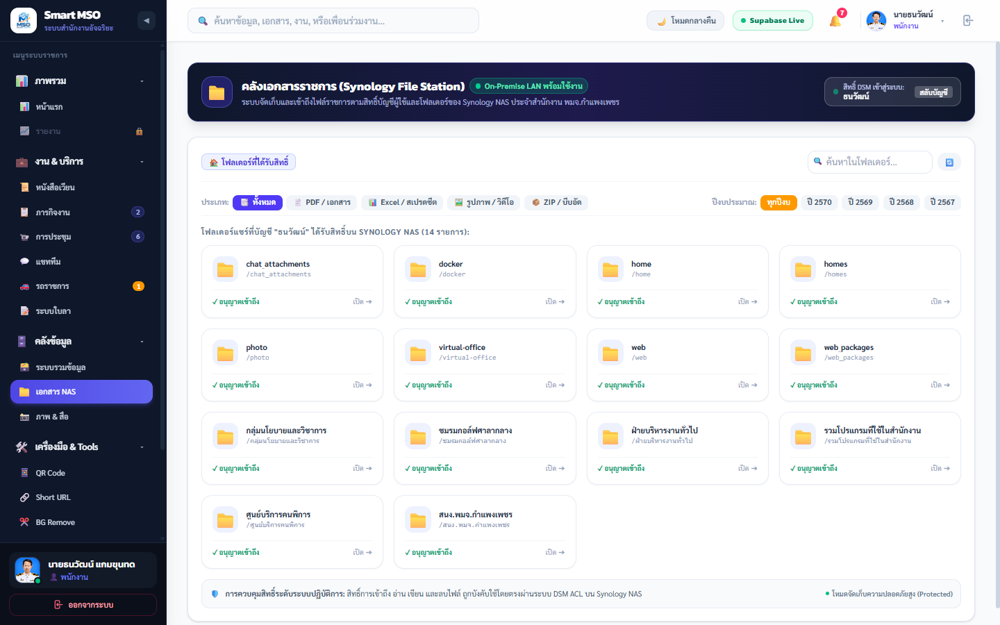
-
1
ตรวจสอบสถานะการเชื่อมต่อ NAS & บัญชี DSM ที่ล็อกอิน: ป้ายสีเขียว ● On-Premise LAN พร้อมใช้งาน ยืนยันเชื่อมต่อ NAS สำเร็จ ด้านขวาแสดงชื่อผู้ใช้ DSM พร้อมปุ่ม สลับบัญชี
-
2
ตัวกรองประเภทเอกสาร & ปีงบประมาณ: กรองดู
PDF / เอกสาร,Excel,รูปภาพ / วิดีโอ,ZIPและกรองตามปีงบประมาณ (2570–2567) -
3
เลือกเปิดโฟลเดอร์แชร์ที่ได้รับสิทธิ์ (DSM ACL): แสดงเฉพาะโฟลเดอร์ที่บัญชีผู้ใช้มีสิทธิ์บน Synology NAS (ตัวอย่าง 14 รายการ เช่น กลุ่มนโยบายและวิชาการ, ฝ่ายบริหารงานทั่วไป, virtual-office) คลิก เปิด ➔ เพื่อเข้าไปดูไฟล์
คลังเอกสาร NAS (ต่อ) — การนำทางโฟลเดอร์ อัปโหลด สร้างโฟลเดอร์ & จัดการไฟล์
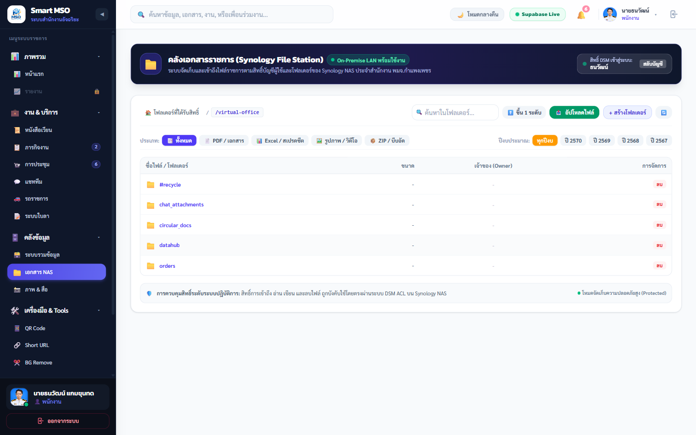
-
1
แถบนำทาง Breadcrumb (🏠 โฟลเดอร์ที่ได้รับสิทธิ์ / virtual-office): คลิกชื่อโฟลเดอร์ต้นทางหรือ
🏠 โฟลเดอร์ที่ได้รับสิทธิ์เพื่อกระโดดกลับหน้าแรกได้ทันที -
2
เครื่องมือจัดการไฟล์ (⬆️ ขึ้น 1 ระดับ / 📤 อัปโหลดไฟล์ / + สร้างโฟลเดอร์): ค้นหาไฟล์ภายในโฟลเดอร์ ย้อนกลับ 1 ระดับ อัปโหลดเอกสารจากเครื่องขึ้น NAS หรือสร้างโฟลเดอร์ใหม่ตามสิทธิ์ที่ได้รับ
-
3
กรองตามนามสกุลไฟล์ & ปีงบประมาณ: กดสลับ
PDF,Excel,รูปภาพ/วิดีโอ,ZIPเพื่อหาไฟล์เป้าหมายได้ไวขึ้น -
4
ตารางรายชื่อไฟล์/โฟลเดอร์ & การควบคุมสิทธิ์ DSM ACL: คลิกชื่อโฟลเดอร์ (เช่น
circular_docs,datahub,orders) เพื่อเปิดดูไฟล์และดาวน์โหลด ภายใต้ระบบสิทธิ์ DSM ACL (Protected)
คลังภาพและสื่อราชการ (Synology Photos)
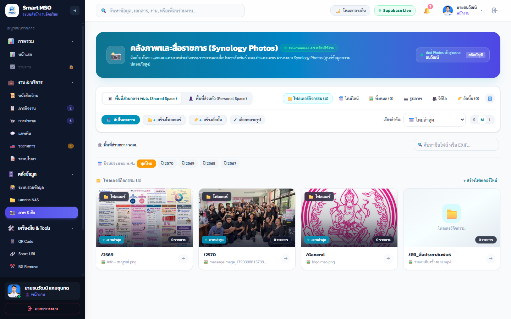
-
1
เลือกพื้นที่ภาพส่วนกลาง (Shared) / ส่วนตัว (Personal) & มุมมอง 6 แท็บ: สลับพื้นที่ส่วนกลางของ พมจ. กับพื้นที่ส่วนตัว และเลือกมุมมอง
📁 โฟลเดอร์กิจกรรม,📅 ไทม์ไลน์,🖼️ ทั้งหมด,📸 รูปภาพ,🎥 วิดีโอ,🏷️ อัลบั้ม -
2
อัปโหลด สร้างอัลบั้ม เรียงลำดับ ปรับขนาด S/M/L & ค้นหา EXIF: ใช้ปุ่ม 📤 อัปโหลดภาพ, 📁+ สร้างโฟลเดอร์, 🏷️+ สร้างอัลบั้ม, ✓ เลือกหลายรูป, เรียงตามวันที่/ชื่อ/ขนาด และค้นหาชื่อไฟล์หรือค่ากล้อง EXIF
-
3
กรองตามปีงบประมาณ & เปิดดูโฟลเดอร์กิจกรรมรายปี: กรองปีงบ (
2570–2567) แล้วคลิกเข้าโฟลเดอร์กิจกรรม (เช่น/2569,/2570,/General,/PR_สื่อประชาสัมพันธ์)
วิเคราะห์จุดเด่น ฟังก์ชันพิเศษ และคำแนะนำการใช้งาน (บทที่ 3 — Data Hub (TPMAP 6 แท็บ), File Station & Synology Photos)
| ประเด็นเปรียบเทียบ | ระบบเดิม (กระดาษ / งานมือ) | ระบบ Smart MSO (ดิจิทัล) | ประโยชน์หลักที่สำนักงานได้รับ |
|---|---|---|---|
| ข้อมูลความยากจน TPMAP | ต้องเปิดหลายไฟล์ Excel / ดาวน์โหลดทีละปี ทีละตำบล ยากต่อการเทียบแนวโน้ม 5 ปี | รวมข้อมูลปี 2565–2569 ครบ 11 อำเภอ 78 ตำบลไว้หน้าเดียว คลิกเทียบ 5 ปี & เรียง 5 มิติ MPI ได้ทันที |
สนับสนุนการตัดสินใจเชิงนโยบายและวางแผนช่วยเหลือกลุ่มเปราะบางได้แม่นยำ |
| คำสั่ง / ประกาศ / แบบฟอร์ม | ค้นหาจากแฟ้มสันห่วงหรือจำไม่ได้ว่าเก็บไว้เครื่องใด พิมพ์เลขไทยไม่ตรงก็หาไม่เจอ | สารบบกลางค้นได้ทั้ง เลขอารบิก/เลขไทย (125 หรือ ๑๒๕) พร้อมไฟล์ PDF บน NAS |
ลดเวลาค้นหาคำสั่งเก่าหรือแบบฟอร์มราชการจากหลักสิบนาทีเหลือไม่กี่วินาที |
| การจัดเก็บไฟล์และภาพถ่าย | ส่งต่อผ่านแฟลชไดรฟ์/LINE (รูปหมดอายุ/ลดความละเอียด) และไม่มีสิทธิ์รายแผนก | เก็บตรงบน Synology File Station & Photos ความละเอียดต้นฉบับ คุมสิทธิ์ตามบัญชี DSM ACL |
ข้อมูลอยู่ภายในเซิร์ฟเวอร์สำนักงาน ปลอดภัย สืบค้นระยะยาวได้ไม่หมดอายุ |
tpmap.in.th ทั้งระดับอำเภอ (11) และตำบล (78) พร้อมสรุป 8 ตัวชี้วัด จปฐ. แผนฯ 13 ตกเกณฑ์สูงสุดอัตโนมัติ125/2569 หรือ ๑๒๕ ระบบค้นเจอตรงกันทันที พร้อมป้ายบอกผลบังคับใช้ (มีผล/แก้ไข/ยกเลิก)/files และ /gallery เชื่อมตรงกับสิทธิระดับ OS ของ Synology NAS- ใช้ปุ่ม 🖨️ พิมพ์รายงาน กบจ. หรือ 📊 ส่งออก Excel ในแท็บที่ 1 เพื่อนำไปประกอบสไลด์หรือเอกสารประชุมประจำเดือนจังหวัดได้ทันที
- คลิกหัวคอลัมน์ในตาราง TPMAP 78 ตำบล (เช่น สุขภาพ / เศรษฐกิจ / การศึกษา) เพื่อหาตำบลเป้าหมายอันดับ 1–5 ในด้านที่กลุ่มงานรับผิดชอบ
- อัปโหลดภาพกิจกรรมเข้าโฟลเดอร์แยกปีงบประมาณ (เช่น /2569, /2570) ใน
📸 ภาพ & สื่อเพื่อให้ทีมประชาสัมพันธ์ค้นภาพต้นฉบับความคมชัดสูงได้ง่าย
โปรแกรมสร้าง QR Code ถาวร 100% (Static Barcode + โลโก้ราชการ)
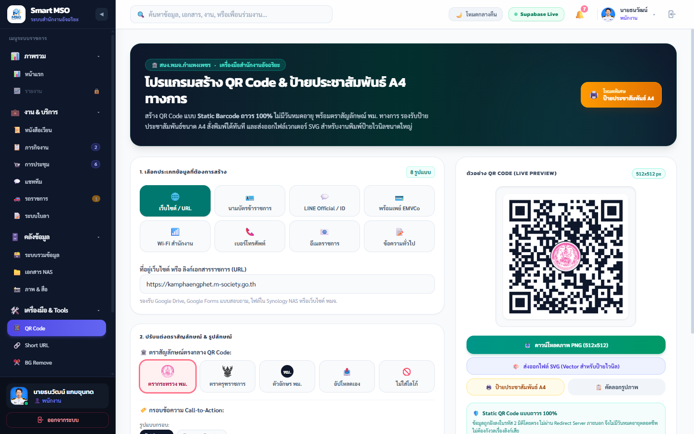
-
1
เลือกประเภทข้อมูล 8 รูปแบบ & กรอกลิงก์/ข้อมูล: รองรับ
เว็บไซต์/URL,นามบัตรข้าราชการ,LINE Official,พร้อมเพย์ EMVCo,Wi-Fi,เบอร์โทร,อีเมล, และข้อความทั่วไป -
2
ใส่โลโก้ตรงกลาง สีทางการ ความละเอียด & Error Correction: เลือก ตรากระทรวง พม., ตราครุฑราชการ, ตัวอักษร พม., หรืออัปโหลดเอง ปรับชุดสีทางการ และขนาด Export สูงสุด
2048×2048 px -
3
ส่งออก PNG, SVG เวกเตอร์ (ป้ายไวนิล) หรือเข้าโหมดป้าย A4: ตรวจตัวอย่างทางขวา แล้วกด 📥 ดาวน์โหลด PNG, 🎨 ส่งออก SVG (Vector), 📋 คัดลอก, หรือ 🖨️ ป้ายประชาสัมพันธ์ A4
โปรแกรมสร้าง QR Code (ต่อ) — โหมดพิเศษ: ป้ายประชาสัมพันธ์ขนาด A4 ทางการ
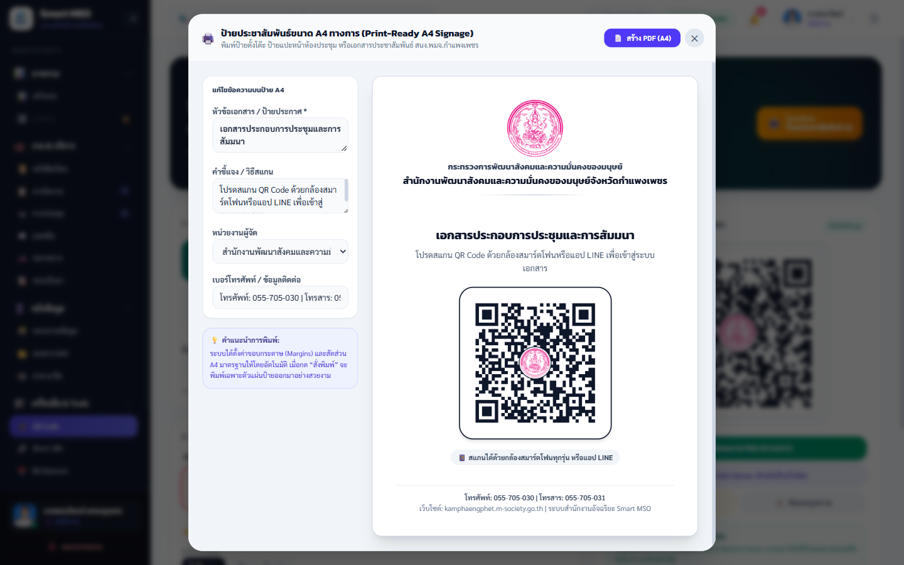
-
1
แก้ไขข้อความและเลือกชื่อหน่วยงานผู้จัดฝั่งซ้าย: กรอก หัวข้อเอกสาร / ป้ายประกาศ * (เช่น เอกสารประกอบการประชุม), คำชี้แจง, เลือก หน่วยงานผู้จัด และเบอร์โทรติดต่อสำนักงาน
-
2
ตรวจความสวยงามบนกระดาษ A4 ตัวอย่าง (Print-Ready): ด้านขวาจัดวาง ตรากระทรวง พม. ชื่อกรม/จังหวัด คำเชิญสแกน และกรอบ QR Code ขนาดใหญ่ตามสัดส่วนมาตรฐานกระดาษ A4 โดยอัตโนมัติ
-
3
กดสร้าง PDF (A4) เพื่อสั่งพิมพ์ตั้งโต๊ะหรือแปะหน้าห้องประชุม: คลิกปุ่ม 📄 สร้าง PDF (A4) ระบบจะส่งออกเป็นไฟล์/คำสั่งพิมพ์ขนาด A4 เฉพาะแผ่นป้ายอย่างสวยงามทันที
ระบบย่อลิงก์ราชการอัจฉริยะ (Short URL ภายใต้โดเมน smso.site/s/)
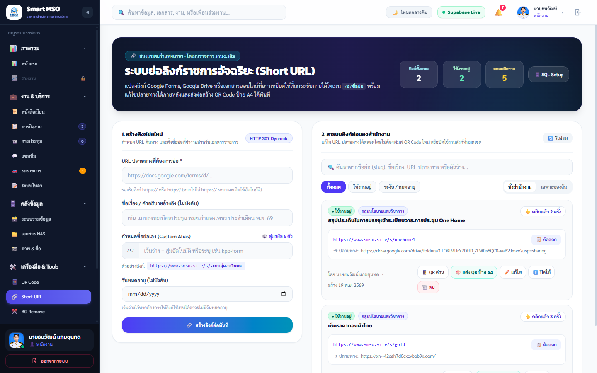
-
1
สรุปยอดรวมลิงก์ย่อและยอดคลิกใช้งานจริง: ดูจำนวน
ลิงก์ทั้งหมด,ใช้งานอยู่, และยอดคลิกรวมของทั้งสำนักงานแบบเรียลไทม์ -
2
สร้างลิงก์ย่อใหม่ (HTTP 307 Dynamic) ฝั่งซ้าย: วางลิงก์ต้นทาง (Google Forms/Drive), กรอกชื่อเรื่องอ้างอิง, ตั้ง Custom Alias (เช่น
/s/onehome1) หรือกด 🎲 สุ่มรหัส 6 ตัว และระบุวันหมดอายุ -
3
จัดการสารบบลิงก์ แก้ไขปลายทาง & ส่งทำ QR Code ฝั่งขวา: กรองสถานะ/เจ้าของ กด 📋 คัดลอก, 📱 QR ด่วน, 🎨 แต่ง QR ป้าย A4, หรือ ✏️ แก้ไข URL ปลายทาง ได้ภายหลังโดยไม่ต้องพิมพ์ QR ใหม่
ระบบลบพื้นหลัง & ปรับแต่งรูปติดบัตรข้าราชการ (ตั้งค่าและอัปโหลด)
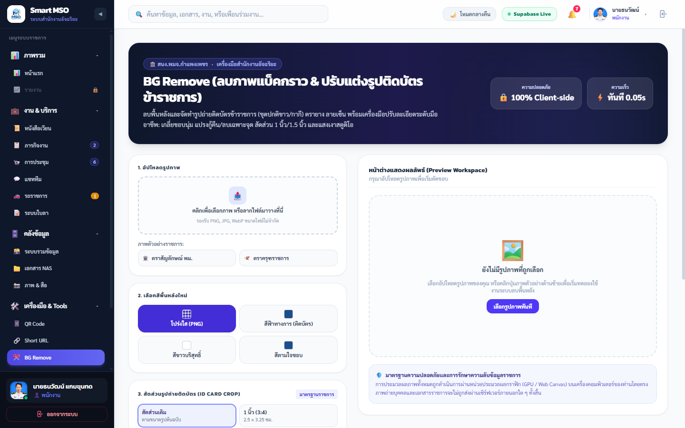
-
1
1. อัปโหลดรูปภาพหรือเลือกภาพตัวอย่างราชการ: คลิกหรือลากไฟล์
PNG / JPG / WebPไม่จำกัดขนาดลงกล่องอัปโหลด หรือทดลองด้วยปุ่ม🏛️ ตราสัญลักษณ์ พม./🦅 ตราครุฑราชการ -
2
2. เลือกสีพื้นหลังใหม่ 4 แบบ: เลือกพื้นหลัง
โปร่งใส (PNG)(สำหรับตรายาง/ลายเซ็น),สีฟ้าทางการ (ติดบัตร),สีขาวบริสุทธิ์, หรือสีตามใจชอบ -
3
3–5. สัดส่วนติดบัตร ก.พ., ปรับละเอียดขอบ & แปรงแต่งภาพ: เลือกครอบสัดส่วน
1 นิ้ว,1.5 นิ้ว (มาตรฐาน ก.พ.),2 นิ้วเลื่อนค่า Tolerance (5–80) / Feathering (0–5px) และประมวลผลบน GPU/Canvas เครื่องตัวเอง 100%
ระบบลบพื้นหลัง (ต่อ) — ตัวอย่างการตัดขอบอัตโนมัติ & สไลด์เปรียบเทียบ
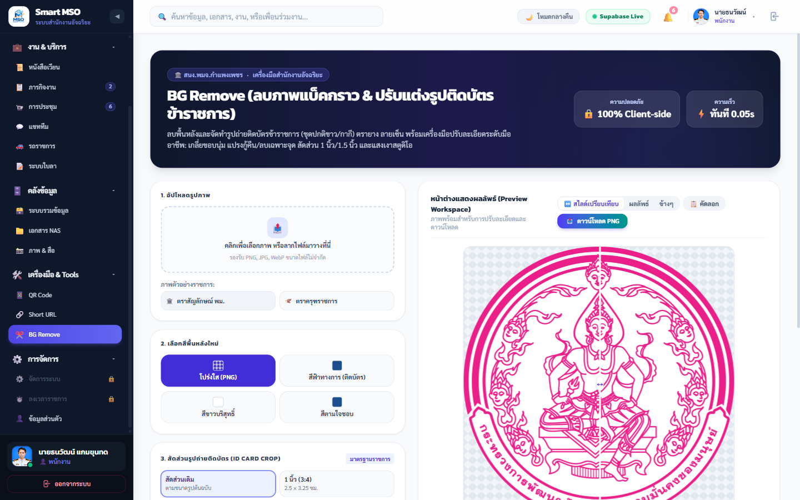
-
1
ประมวลผลตัดพื้นหลังทันทีในเสี้ยววินาที (⚡ 0.05s): เมื่อเลือกรูปหรือคลิกภาพตัวอย่าง
🏛️ ตราสัญลักษณ์ พม.ระบบประมวลผลผ่าน Web Canvas บนเบราว์เซอร์ทันที -
2
สลับโหมดเปรียบเทียบ คัดลอก หรือดาวน์โหลด PNG: เลือกดูแบบ ↔️ สไลด์เปรียบเทียบ, ผลลัพธ์, หรือ ข้างๆ และคลิก 📋 คัดลอก หรือ 📥 ดาวน์โหลด PNG ไปใช้ต่อในเอกสารราชการได้ทันที
-
3
เลื่อนแกนกลาง (↔) ตรวจความคมชัดของขอบภาพ: ลากเส้นแบ่งซ้าย-ขวาเทียบ
ต้นฉบับกับตัดขอบแล้ว(พื้นหลังตารางหมากรุก = โปร่งใสพร้อมใช้งาน)
ข้อมูลส่วนตัว การตั้งค่าแจ้งเตือน ธีม และรหัสผ่าน Synology NAS
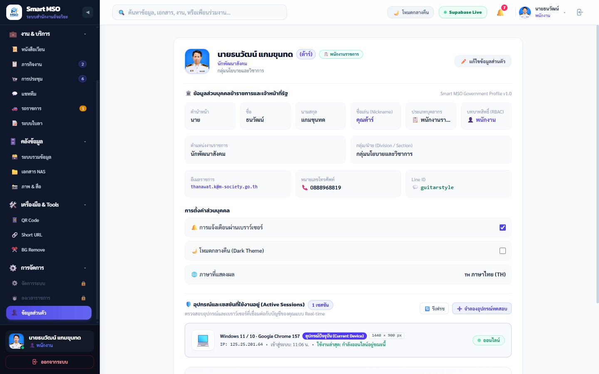
-
1
ตรวจสอบข้อมูลบัตรโปรไฟล์ & กดแก้ไขข้อมูลส่วนตัว: แสดงรูปโปรไฟล์ ชื่อ-นามสกุล ชื่อเล่น ประเภทบุคลากร ตำแหน่ง กลุ่มงาน พร้อมปุ่ม ✏️ แก้ไขข้อมูลส่วนตัว ด้านขวา
-
2
ข้อมูลส่วนบุคคลราชการ (Government Profile v1.0): แสดงคำนำหน้า ชื่อ-นามสกุล บทบาทสิทธิ์ (RBAC) ตำแหน่ง กลุ่ม/ฝ่าย อีเมลราชการ เบอร์โทร และ Line ID ที่ใช้แสดงในทำเนียบองค์กร
-
3
ตั้งค่าเบราว์เซอร์ โหมดกลางคืน ตรวจเซสชัน & เปลี่ยนรหัสผ่าน NAS: ตั้งค่าแจ้งเตือน/โหมดมืด ตรวจรายการ 🛡️ Active Sessions (อุปกรณ์ที่ล็อกอินอยู่) และเลื่อนลงด้านล่างเพื่อกด 🔑 เปลี่ยนรหัสผ่าน NAS (
nas.smso.site)
วิเคราะห์จุดเด่น ฟังก์ชันพิเศษ และคำแนะนำการใช้งาน (บทที่ 4 — QR Code, Short URL, BG Remove & ข้อมูลส่วนตัว)
| ประเด็นเปรียบเทียบ | ระบบเดิม (กระดาษ / งานมือ) | ระบบ Smart MSO (ดิจิทัล) | ประโยชน์หลักที่สำนักงานได้รับ |
|---|---|---|---|
| การสร้าง QR Code งานราชการ | ใช้เว็บฟรีภายนอก มีโฆษณา ใส่ตรา พม./ครุฑยาก และอาจหมดอายุ (Dynamic Trial) จนสแกนไม่ได้ | Static QR Code ถาวร 100% ใส่ตรา พม./ตราครุฑ พร้อมพิมพ์ ป้ายประชาสัมพันธ์ A4 & SVG ไวนิล |
เชื่อถือได้ตามมาตรฐานราชการ ไม่มีวันหมดอายุตลอดชีพ และลดค่าจ้างออกแบบภายนอก |
| การจัดการลิงก์เอกสารยาว | ลิงก์ Google Drive/Forms ยาวหลายบรรทัด จำไม่ได้ และถ้าแก้ไฟล์ใหม่ต้องพิมพ์ป้าย QR ใหม่ทั้งหมด | Short URL (/s/ชื่อย่อ) ภายใต้โดเมน smso.site แก้ไขปลายทางได้ตลอดพร้อมนับสถิติคลิก |
สื่อสารสั้นกระชับ น่าเชื่อถือในโดเมนหน่วยงาน และปรับลิงก์ได้โดยไม่ต้องทิ้งป้ายเดิม |
| การแต่งภาพ/ลบพื้นหลังบัตร | อัปโหลดรูปข้าราชการ ลายเซ็น หรือตรายางขึ้นเว็บต่างประเทศ (เสี่ยงด้านข้อมูลส่วนบุคคล/PDPA) | BG Remove 100% Client-side ประมวลผลบนเครื่องตัวเอง ไม่ส่งไฟล์ออกนอกเซิร์ฟเวอร์ |
รักษาความปลอดภัยของภาพถ่ายบุคคล/ลายเซ็น 100% และทำรูปติดบัตร 1 / 1.5 นิ้ว ก.พ. ได้ทันที |
- ใช้สูตรคู่ “Short URL ➜ แต่ง QR ป้าย A4” เสมอ เมื่อทำแบบลงทะเบียนประชุมหรือคลังเอกสาร เพื่อให้เปลี่ยนลิงก์ปลายทางทีหลังได้แม้พิมพ์แจกไปแล้ว
- เลือก Level H (30%) เมื่อใส่ตราสัญลักษณ์ พม. หรือครุฑตรงกลาง QR เพื่อรับประกันว่ากล้องสมาร์ตโฟนสแกนติดง่ายแม้ป้ายมีความยับหรือแสงน้อย
- หลังลบพื้นหลังลายเซ็นหรือตราประทับใน BG Remove ให้เลือกพื้นหลัง “โปร่งใส (PNG)” แล้วนำไปวางบนเอกสาร Word/PDF ได้อย่างแนบเนียน
ตารางสิทธิ์การเข้าถึงตามบทบาท (RBAC Permission Matrix)
| # | โมดูลระบบ (Module) | เส้นทาง (Route) | Admin | Manager | Member | Guest |
|---|---|---|---|---|---|---|
| 1 | 📊 หน้าแรก (Dashboard) | /dashboard |
✓ | ✓ | ✓ | 🔒 |
| 2 | 💬 แชททีม (Chat) | /chat |
✓ | ✓ | ✓ | ✓ |
| 3 | 📜 หนังสือเวียน (Circular) | /circular |
✓ | ✓ | ✓ | 🔒 |
| 4 | 📋 ภารกิจงาน (Tasks) | /tasks |
✓ | ✓ | ✓ | 🔒 |
| 5 | 📹 การประชุม (Meetings) | /meetings |
✓ | ✓ | ✓ | ✓ |
| 6 | 🚗 รถราชการ (Car Booking) | /carbooking |
✓ | ✓ | ✓ | 🔒 |
| 7 | 📝 ระบบใบลา (Leave) | /leave |
✓ | ✓ | ✓ | 🔒 |
| 8 | 🗃️ ระบบรวมข้อมูล (Data Hub) | /data-hub |
✓ | ✓ | ✓ | 🔒 |
| 9 | 📁 เอกสาร NAS (File Station) | /files |
✓ | ✓ | ✓ | 🔒 |
| 10 | 📸 ภาพ & สื่อ (Synology Photos) | /gallery |
✓ | ✓ | ✓ | 🔒 |
| 11 | 📱 QR Code ถาวร | /tools/qrcode |
✓ | ✓ | ✓ | ✓ |
| 12 | 🔗 Short URL ย่อลิงก์ | /tools/shorturl |
✓ | ✓ | ✓ | ✓ |
| 13 | ✂️ BG Remove ลบพื้นหลัง | /tools/bgremove |
✓ | ✓ | ✓ | ✓ |
| 14 | 👤 ข้อมูลส่วนตัว (Profile) | /user |
✓ | ✓ | ✓ | ✓ |
| 15 | 📈 รายงาน (Reports) | /reports |
✓ | ✓ | 🔒 | 🔒 |
| 16 | ⏱️ ลงเวลาราชการ (Attendance) | /attendance |
✓ | ⚠️* | 🔒 | 🔒 |
| 17 | ⚙️ จัดการระบบ (Admin Panel) | /admin |
✓ | 🔒 | 🔒 | 🔒 |
หมายเหตุ: ✓ = เข้าใช้งานได้ตามสิทธิ์มาตรฐาน · 🔒 = ไม่มีสิทธิ์เข้าถึงตามบทบาทเริ่มต้น · ⚠️* (ลงเวลาราชการ) เข้าถึงได้เฉพาะ Admin หรือผู้ที่ได้รับการกำหนดสิทธิ์ในรายชื่อผู้แก้ไขลงเวลา (Authorized Editors) โดยตรง
รายละเอียด 3 โมดูลที่แสดงสัญลักษณ์ 🔒 สำหรับบทบาทพนักงาน (Member)
บัญชีระดับ 👤 พนักงาน (Member) จะเห็นสัญลักษณ์ 🔒 (ไม่มีสิทธิ์เข้าถึงตามบทบาทปัจจุบัน) ที่เมนู 3 รายการต่อไปนี้ เพื่อความปลอดภัยและธรรมาภิบาลข้อมูลของสำนักงาน:
/reports- แดชบอร์ดคำนวณสด (Live Computed): สรุปสถิติจาก Supabase PostgreSQL Real-time ใน 4 มิติ ได้แก่ อัตราความสำเร็จของภารกิจ Kanban, สถิติการประชุม (ออนไลน์/ออนไซต์), คำขอใช้รถราชการ, และงบค่าน้ำมันขอใช้สะสม
- การส่งออกรายงานทางราชการ: รองรับปุ่ม 📊 ส่งออก CSV (สตง.) และ 📑 ส่งออก PDF สำหรับจัดทำรายงานผลการดำเนินงานประจำเดือน
/attendance- สถาปัตยกรรม Hybrid 3 ฐานข้อมูล: เชื่อมเครื่องสแกนลายนิ้วมือ
HIP CMi681S↔MariaDB บน Synology NAS↔Supabase Cloudรองรับโหมด ☁️ Cloud Replica และคิวสั่งซิงก์ระยะไกล (Remote Sync Queue) - 2 มุมมองหลัก: 📋 รายการบันทึกเวลาทั้งหมด (กรองตามปฏิทินปีงบประมาณไทย ต.ค.–ก.ย.) และ 📊 รายงานประจำวัน (ID 2–42) แยก 2 ชุดมาตรฐาน (
1. ขรก./พรก.และ2. พนง.กองทุน/จ้างเหมา) - การส่งออกและจับคู่: ส่งออก 📊 Excel 2 ชีท (.xlsx), 📝 Word (.docx), 📄 PDF (A4) พร้อมหน้าต่าง 👥 จับคู่รหัสสแกน (User ID)
/admin- ศูนย์ควบคุม 10 แท็บครบวงจร:
👥 สมาชิก & สิทธิ์,📬 คำขอสิทธิ์ใหม่,🔒 กำหนดสิทธิ์ (RBAC Matrix),💬 ห้องสื่อสารองค์กร,🚗 ยานพาหนะราชการ,🏛️ ห้องประชุม & สถานที่,🏢 โครงสร้างกลุ่มงาน,📜 ทะเบียนหนังสือเวียน,📜 Audit Logs, และ💾 Synology NAS
RBAC Matrix หรือรายชื่อผู้แก้ไขลงเวลาวิเคราะห์จุดเด่น ฟังก์ชันพิเศษ และคำแนะนำการใช้งาน (บทที่ 5 — ระบบสิทธิ์ RBAC, รายงานผู้บริหาร, ลงเวลาราชการ & Admin Panel)
| ประเด็นเปรียบเทียบ | ระบบเดิม (กระดาษ / งานมือ) | ระบบ Smart MSO (ดิจิทัล) | ประโยชน์หลักที่สำนักงานได้รับ |
|---|---|---|---|
| การจัดเก็บเวลาสแกนนิ้ว | ต้องไปดึงไฟล์จากเครื่องสแกนด้วยสาย LAN/USB แล้วนำมาจัดคอลัมน์ใน Excel ทุกเช้าทีละชุด | ซิงก์ตรงจากเครื่อง HIP CMi681S ลง MariaDB NAS + Supabase พร้อมออก Excel/Word/PDF 2 ชุดทันที |
ลดงานธุรการประจำวันลงกว่า 80% และรองรับดูย้อนหลังแบบ Cloud Replica |
| การสรุปรายงานผู้บริหาร | รวบรวมตัวเลขงาน ประชุม และค่าน้ำมันจากหลายไฟล์/หลายฝ่ายกว่าจะสรุปได้ใช้เวลาหลายวัน | หน้า 📈 รายงาน คำนวณสดแบบ Realtime จากฐานข้อมูล พร้อมปุ่มส่งออก CSV (สตง.) / PDF |
ผู้บริหารเห็นตัวเลขจริงทันเหตุการณ์ ไม่มีข้อมูลตกหล่นหรือคลาดเคลื่อน |
| การควบคุมสิทธิ์ & ตรวจสอบ | ไม่มีระบบ Audit Log บันทึกว่าใครเปิดดู แก้ไข หรือปฏิเสธคำขอใด เมื่อไร | RBAC Matrix 4 บทบาท แยกสิทธิ์ 17 โมดูลชัดเจน พร้อม Audit Logs ตรวจสอบย้อนหลังได้ |
ยกระดับธรรมาภิบาลและความปลอดภัยสารสนเทศตามมาตรฐานหน่วยงานรัฐ |
HIP CMi681S + Synology MariaDB + Supabase สั่งซิงก์จากระยะไกลได้แม้เปิดระบบนอกสำนักงาน- เจ้าหน้าที่ใหม่ต้องแจ้งธุรการจับคู่รหัสสแกนนิ้ว (User ID) กับบัญชีระบบทันที เพื่อให้หน้า
📝 ระบบใบลาขึ้นสถานะ🔗 เชื่อมเครื่องสแกนนิ้วแล้ว - เจ้าหน้าที่ฝ่ายบริหาร/ผู้ได้รับคำสั่งงานลงเวลา สามารถขอสิทธิ์
Authorized Editorเฉพาะหน้า/attendanceได้โดยไม่ต้องเปิดสิทธิ์ Admin ทั้งระบบ - ผู้บริหารระดับ Manager สามารถส่งออกรายงาน CSV (สตง.) และ PDF ได้โดยตรงจากเมนู
📈 รายงานเพื่อสรุปผลการดำเนินงานรายเดือน
ตารางอาการที่พบบ่อยและแนวทางแก้ไขเบื้องต้น (FAQ)
| อาการที่พบ / สถานการณ์ | สาเหตุและแนวทางแก้ไขเบื้องต้น |
|---|---|
| หน้าต่าง Cloudflare Turnstile ไม่ผ่านขณะเข้าสู่ระบบ | รีเฟรชหน้าเข้าสู่ระบบใหม่ ตรวจสอบวันที่และเวลาเครื่องให้ตรงตามเวลาประเทศไทย (UTC+7) และหลีกเลี่ยงการใช้ VPN/Proxy ระหว่างล็อกอิน |
หน้า /files หรือ /gallery รอโหลดนานหรือแจ้งปัญหาเครือข่าย |
ระบบกำลังเชื่อม Synology NAS ของสำนักงาน ให้คลิกปุ่ม 🔄 เพื่อโหลดใหม่ หรือกด สลับบัญชี และตรวจสอบรหัสผ่าน NAS ในหน้า 👤 ข้อมูลส่วนตัว |
หน้า /leave แสดงป้าย ⚠️ ยังไม่จับคู่รหัสเครื่องสแกน |
ประสานผู้ดูแลระบบหรือฝ่ายบริหารทั่วไปให้จับคู่รหัสสแกนนิ้ว (User ID) กับบัญชีผู้ใช้ เพื่อเปิดใช้การซิงก์ใบลาลงรายงานลงเวลาราชการอัตโนมัติ |
หน้า /data-hub แท็บ TPMAP ต้องการอัปเดตข้อมูลปีล่าสุด |
กดปุ่ม 🔄 ซิงก์ปี 2569 ล่าสุด เพื่อดึงข้อมูลชุดล่าสุด หรืออ่านข้อมูลจากแคชมาตรฐาน 💾 แคชใน Supabase ได้ทันที |
| สร้าง QR Code แล้วต้องการเปลี่ยน URL ปลายทางภายหลัง | ให้ย่อลิงก์ผ่าน 🔗 Short URL ก่อน แล้วกดปุ่ม 🎨 แต่ง QR ป้าย A4 เพื่อผูก QR Code กับลิงก์ /s/ชื่อย่อ ซึ่งแก้ปลายทางได้ตลอดโดยไม่ต้องพิมพ์ป้ายใหม่ |
| เมนูบางรายการแสดงสัญลักษณ์ 🔒 | เป็นการควบคุมสิทธิ์ตามบทบาท (RBAC) ให้ประสาน ผู้ดูแลระบบ (Admin) เพื่อตรวจสอบและกำหนดสิทธิ์ตามบทบาทหน้าที่ที่ได้รับมอบหมาย |
Checklist ปฏิบัติงานดิจิทัลประจำวัน (Daily Workflow Checklist)
Dashboard และ 🔔 ศูนย์การแจ้งเตือน เพื่อตรวจหนังสือเวียนเข้า งานค้าง และนัดประชุมวันนี้💬 แชททีม อัปเดตสถานะ 📋 ภารกิจงาน และยื่นจองรถ/ใบลาออนไลน์ล่วงหน้า📁 เอกสาร NAS ภาพกิจกรรมใน 📸 ภาพ & สื่อ และเผยแพร่ด้วย Short URL + QRวิเคราะห์จุดเด่น ฟังก์ชันพิเศษ และคำแนะนำการใช้งาน (บทที่ 6 — ภาพรวมความคุ้มค่าทั้งระบบ (Paper Office vs Smart MSO))
| ประเด็นเปรียบเทียบ | ระบบเดิม (กระดาษ / งานมือ) | ระบบ Smart MSO (ดิจิทัล) | ประโยชน์หลักที่สำนักงานได้รับ |
|---|---|---|---|
| ต้นทุนทรัพยากรสำนักงาน | สิ้นเปลืองกระดาษ หมึกพิมพ์ แฟ้มเอกสาร และพื้นที่ตู้เก็บเอกสารจำนวนมากทุกปี | ลดงานกระดาษในหนังสือเวียน ใบลา คำขอรถ และการค้นหาคำสั่ง เก็บบนระบบ Hybrid Cloud + NAS | ประหยัดงบวัสดุสำนักงานและลดระยะเวลาเดินเอกสารข้ามกลุ่มงานอย่างชัดเจน |
| ความต่อเนื่องแม้ทำงานนอกพื้นที่ | หากอยู่นอกสำนักงาน (ลงพื้นที่ 11 อำเภอ/ราชการ) เข้าถึงไฟล์และอนุมัติเอกสารไม่ได้ | ใช้งานได้ทุกที่ผ่าน https://www.smso.site ทั้งเดสก์ท็อปและมือถือ เชื่อม Synology NAS ปลอดภัย |
ผู้บริหารอนุมัติงานด่วนได้ทันเวลา และทีมลงพื้นที่เปิดดูข้อมูล TPMAP/แบบฟอร์มได้ทันที |
| ความเชื่อมโยงระหว่างข้อมูล | ข้อมูลแต่ละฝ่ายแยกส่วนเป็น Silo ไม่คุยกัน ต้องคีย์ซ้ำหลายรอบ | ข้อมูลเชื่อมโยงเป็นเครือข่ายเดียว (ใบลา ➜ ลงเวลา, แชท ➜ NAS/ประชุม, Short URL ➜ ป้าย QR A4) | ข้อมูลชุดเดียวสอดคล้องกันทั้งสำนักงาน (Single Source of Truth) |
- ใช้ช่องค้นหาด้านบนสุดของ Header เมื่อจำไม่ได้ว่าเอกสารหรือเพื่อนร่วมงานอยู่ในเมนูใด ระบบช่วยค้นหาข้อมูลข้ามโมดูลได้ทันที
- จัดทำ Shortcut บนหน้าจอเดสก์ท็อปหรือติดตั้งเป็น PWA ผ่านเบราว์เซอร์ Chrome/Edge เพื่อให้เปิดใช้งาน Smart MSO ได้เหมือนโปรแกรมประยุกต์
- รายงานปัญหาหรือข้อเสนอแนะฟีเจอร์ใหม่ ผ่านกลุ่มแชทกลางหรือผู้ดูแลระบบ เพื่อให้ระบบได้รับการพัฒนาต่อเนื่องตามภารกิจหน้างานจริง
แนวทางต่อยอดด้าน CRM เพื่อประชาชนและกลุ่มเปราะบาง (Citizen Relationship Management)
🏡 ระบบเยี่ยมบ้านออนไลน์ (Home Visit Online)
- แบบบันทึกเยี่ยมบ้านภาคสนาม (Mobile-Ready): นักพัฒนาสังคม/นักสังคมสงเคราะห์ บันทึกแบบประเมินสภาพความเป็นอยู่ ปัญหา 5 มิติ และความต้องการช่วยเหลือจากหน้างานผ่านมือถือได้ทันที
- ปักหมุดพิกัด GPS & ภาพถ่ายลงพื้นที่: ระบุตำแหน่งครัวเรือนเป้าหมายบนแผนที่จังหวัดกำแพงเพชร เก็บภาพ Before–After บน
Synology NASอัตโนมัติ พร้อมแผนที่ความร้อน 11 อำเภอ - เชื่อมข้อมูล TPMAP & ศรส. 1300: ดึงรายชื่อตกเกณฑ์ จปฐ. จากระบบ TPMAP มาเปิดเคสติดตามเยี่ยมบ้านต่อเนื่องจนพ้นเกณฑ์ความเปราะบาง
🩺 คลินิกทางสังคมออนไลน์ (Online Social Clinic)
- นัดหมายคิว & ให้คำปรึกษาทางไกล (Tele-Counseling): เปิดช่องทางให้ประชาชนหรือเครือข่าย อพม. จองเวลาขอรับคำปรึกษาปัญหาครอบครัว เด็ก สตรี ผู้สูงอายุ และคนพิการแบบวิดีโอคอล/แชท
- ระบบส่งต่อเคสสหวิชาชีพ: ส่งต่อคำร้องระหว่าง นักสังคมสงเคราะห์ — นิติกร — นักจิตวิทยา — ศูนย์บริการคนพิการ พร้อมบันทึกความก้าวหน้าการช่วยเหลือแบบครบวงจร
- คุ้มครองข้อมูลส่วนบุคคล (PDPA Consent): จัดเก็บบันทึกเคสอย่างปลอดภัย ควบคุมสิทธิ์การเข้าถึงข้อมูลเปราะบางตามบทบาทหน้าที่ (Confidential RBAC)
🤝 ฐานข้อมูลสวัสดิการแบบ 360 องศา & เครือข่าย อพม. 11 อำเภอ
บูรณาการประวัติการรับสิทธิสวัสดิการทุกประเภท (เงินสงเคราะห์เด็กในครอบครัวยากจน, เบี้ย/บัตรคนพิการ, เงินกู้ยืมประกอบอาชีพ, เงินอุดหนุนซ่อมแซมบ้าน) เข้าด้วยกันในรหัสบัตรประชาชนเดียว พร้อมช่องทางให้ อาสาสมัครพัฒนาสังคมและความมั่นคงของมนุษย์ (อพม.) ทั้ง 78 ตำบลรายงานเคสเร่งด่วนเข้าสู่ศูนย์ปฏิบัติการ พมจ. ได้แบบเรียลไทม์
แนวทางต่อยอดด้าน HRM (ระบบบริหารทรัพยากรบุคคลดิจิทัล)
ลงเวลาราชการ (HIP CMi681S) + วันลาที่อนุมัติ + ความสำเร็จงาน Kanban มาสรุปผลประเมินแผนการพัฒนา 3 ระยะ (Phase 1–3) & วิเคราะห์ความคุ้มค่าในอนาคต
| มิติการต่อยอดอนาคต | ข้อจำกัดแบบเดิม (ลงพื้นที่ / ประเมินคน) | สิ่งที่ Smart MSO HRM & CRM จะเข้ามายกระดับ |
|---|---|---|
| เยี่ยมบ้าน & คลินิกสังคม | จดแบบฟอร์มกระดาษหน้างาน กลับมาพิมพ์รายงานซ้ำที่สำนักงาน ไม่เห็นแผนที่ความช่วยเหลือซ้ำซ้อน | บันทึกพิกัด GPS ภาพถ่าย & ปรึกษาออนไลน์จากภาคสนาม/บ้านประชาชน เชื่อม TPMAP & ศรส. 1300 ทันที |
| การบริหารงานบุคคล HRM | รวบรวมสถิติลา มาสาย อบรม และผลปฏิบัติงานรอบ 6 เดือนจากเอกสารหลายแฟ้ม | ดึงข้อมูลเวลาเข้างาน + วันลา + ภารกิจ Kanban + IDP อัตโนมัติ ลดภาระงานบุคคลและเป็นธรรมโปร่งใส |
Smart MSO Virtual Office
สำนักงานพัฒนาสังคมและความมั่นคงของมนุษย์จังหวัดกำแพงเพชร
กระทรวงการพัฒนาสังคมและความมั่นคงของมนุษย์